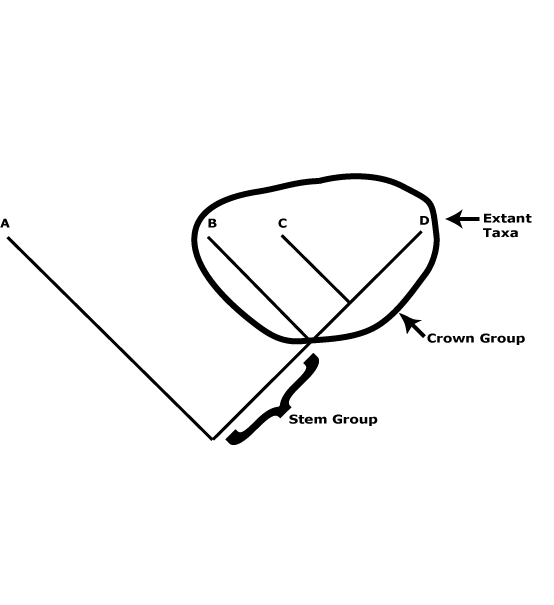

On classifications in general, and this classification in particular
A phylogenetic tree of seed plants
On the interpretation of the text, abbreviations, etc.
Asterids, commelinids, core eudicots, asterid 1, asterid 2, eudicots, gymnosperms, Magnoliophyta, monocots, N-fixing clade, rosids, seed plants.
This linked series of four pages is a simplified version of the main site. The focus is on the larger patterns evident in the phylogeny, evolution and diversification of seed plants, and on morphological variation in general.
Systematics is a profoundly historical discipline, and we forget this at our peril. Only with a phylogeny can we begin to understand diversification, regularities in patterns of evolution, or simply suggest individual evolutionary changes within a clade. Our recovery of that phylogeny is the recovery of evidence of a series of unique events that comprises the history of life. Although our knowledge of the major clades of seed plants and the relationships within and between them are still somewhat in a state of flux, much of the broad outline is clear (see the Angiosperm Phylogeny Group II 2003). Furthermore, as details of phylogeny are clarified and new findings made in anatomy, morphology, etc., they can be rapidly integrated the Angiosperm Phylogeny Group system that is followed here. Books are out-of-date before they appear, furthermore, there is no comprehensive phylogeny-based treatment of angiosperms, out-of-date or not; D. Soltis et al. (2005b) is the closest (also, take the following link to a regularly updated and printable Angiosperm Phylogeny Poster).
These pages are for undergraduate students with an interest in botany and some knowledge of basic plant morphology and for those with a general interest in seed plant evolution. They are made up of a much modified "Apomorphies" page that has been combined with the order pages, all very much changed. The focus is on providing possible apomorphies for as many clades as possible, although there is much less detail than in the Apomorphies page (much chemistry, details of ovule morphology other than general appearance, most indications of base chromosome number, etc., have been removed) and I have simplified the vocabulary somewhat. There is also information on the sizes and distributions of families, lists of the larger genera included, features by which families can be recognised, comments about the ages (to be treated with considerable caution) and diversification of groups and about the major herbivores, pollinators, and seed dispersers associated with them, notes on interesting morphological variation, summaries of what is known about infrafamilial phylogenetic relationships, etc. The literature cited will allow the student find the major morphological, taxonomic and phylogenetic information about each family, especially when the "Characters" page is also consulted. Phylogenies of most orders and of some families (e.g. Poaceae) are included, but not maps or images, for these, there are links from each family to the more detailed treatments on the individual order pages. In larger families I tend to focus on literature that deals with monophyletic groups that include fifty or more taxa, in smaller families the coverage is more detailed.
I have emphasized plant families because they are the groups - admittedly partly arbitrary as to circumscription, but now for the most part monophyletic - around which many of us organize our understanding of plant diversity. I also pay attention to groupings of families because so much progress has been made in the last decade in particular in sorting them out. Infrafamilial groups in groups like Poaceae, Malvaceae and Ericaceae are also included, and these are being added to as studies become available.
But we don't want to know just about clades, we want to know what makes clades unique, the synapomorphies or shared derived characters of those clades that first appeared in their immediate ancestors. However, for the most part our knowledge of synapomorphies remains poor; ss we will see, finding out the composition of clades is often easier than finding the synapomorphies for the same clades (see the discussion below). And of course knowing about synapomorphies is just one aspect of understanding the whys and wherefores of the evolution and diversification of seed plants, our ultimate goal.
ON CLASSIFICATIONS IN GENERAL, AND THIS CLASSIFICATION IN PARTICULAR
On classifications in general
Classifications in the broad sense are box-in-box, group-in-group, or part/whole naming devices that we use to communicate aspects of our knowledge of things in general. From this point of view, there is nothing particularly special about biological classifications apart, perhaps, from their sizes. For any biological classification system to be effective, it must be stable, universal (i.e., be used by a wide range of people), comprehensive (if too many taxa are unplaced at the level of interest, the classification is of less utility), and it must enhance communication of knowledge by helping us to relate things (Stevens 2006a for references). Phylogenetic classifications convey aspects of our knowledge about phylogenetic relationships of organisms. Thus a family is clearly flagged as such and is a monophyletic group that can contain several genera, also flagged as such and also monophyletic, but a genus can never include families. Generic, family, etc., names are simply words we use to denote appropriate parts of phylogenies and minimal aspects of their relationships, and the irreducible aspect of relationships that is emphasized here is monophyly. A monophyletic group is one containing only and all descendents of a common ancestor, and it is often characterizable by apomorphies, that is, shared, derived characters that appeared in the ancestral lineage or stem clade of that monophyletic group.
Thus I am using a flagged, i.e. ranked, hierarchy for naming taxa, rather than the unranked systems that have recently been proposed (see below). The rank terminations used (-ales, -aceae, etc. - the "flags") merely suggest relative positions of groups in the local hierarchy. If Ericaceae and Vaccinioideae are part of the same monophyletic group, the latter must refer to a clade nested within the former, even if neither can necessarily be directly compared with Polemoniaceae and Cobaeoideae (other than all being putatively monophyletic groups). Such a flagged hierarchy is useful as a mnemonic and communication device (e.g. Stevens 2006a). It improves memorization, and emphasis on families and orders, as here, is a didactic device - families are monophyletic units useful in communication, major units learned by biologists and others world-wide.
The distinction between grouping and ranking is extremely important, as is how we interpret the latter. We can both agree that there is a genus Acer, yet disagree as to whether it should be in Aceraceae or submerged in Sapindaceae. Although from one point of view this disagreement is utterly trivial, it can have profound consequences if we misunderstand the nature of the classificatory hierarchy. Taxa at the same rank are equivalent only by designation and have nothing necessarily in common (unless they are sister taxa) other than their monophyly. Rank as used here has no meaning other than signifying a monophyletic group that includes other monophyletic groups with appropriately subordinate rank terminations. Taxa at the same rank have often been treated incorrectly as if they were equivalent by biologists attempting to understand evolutionary or biogeographic problems (see Bertrand et al. 2006 for detailed discussion), even if those constructing or using classifications - including Darwin (1859) - have been explicit about the non-equivalence of taxa at the one rank (Stevens 1997). In fact, rank terminations have relatively infrequently been used by taxonomists to reflect absolute rank, although Linnaeus (at least in theory) at the level of genus and species may be such an example. (Classifications where rank is absolute, taxa at the same rank somehow being comparable entities, are class hierarchies in the strict sense - Stevens 2002, 2006a). It has also been suggested that taxon rank be adjusted so that rank somehow reflects the degree of morphological differences between taxa, or that taxa at the same rank be based on similar characters, or show a similar amount of distinctness. This might be possible using phenetic methods of analysis, but is very difficult if one's classification is phylogeny-based, as here, it could promote instability if used in taxa where such a criterion had not previously been used, and it might also inadvertently suggest that taxa might be equivalent (for an example, see Fritsch et al. 2008). There have also been proposals that rank could reflect the age of the clade (e.g. Hennig 1966), with clades that have diverged by a particular time all being given the same rank. Apart from the fact that aging times of divergence of clades is still a difficult enterprise, huge disruptions to our nomenclature would result. Recent suggestions which invoke the use of age in classifications focus on providing a standardized "timeclip", i.e. a set of letters referring to a particular geological period, that could simply be added to a conventional taxon name (Avise & Mitchell 2007). However, even such timeclips are unlikely to come into general use soon.
It would be impossible even to think about a higher-level classification such as this without the advances in our understanding of relationships made by the phylogenetic analyses of molecular data carried out over the last twenty years. One can then integrate the data to be found in both classical and recent morphological studies with these phylogenies. For the dramatic changes in this area, see, for instance, the pessimistic attitude towards orders in Davis and Heywood (1963: 107-108); "The most unsatisfactory taxon in Angiosperm classification", they were "indefinable", their circumscription was not fixed, etc. Families, they thought, were likely to be the largest "natural" unit within the mono- or dicotyledons. Along the same lines, almost three quarters of the orders (44/59, monofamilial orders ignored) recognised by Cronquist (1981) are not monophyletic, i.e. they do not contain all and only the descendents of a common ancestor. Most of those orders that are monophyletic are very small (Zingiberales, with eight families, are the largest); for families, on the other hand, about two thirds (189/273) are monophyletic.
Turning now to phylogenetic classifications, and the particular classification used here, Backlund and Bremer (1998) provide a useful discussion on the principles of phylogenetic classification that is applicable at all levels apart from species (see also Stevens 1998; also Albach et al. 2004; Entwisle & Weston 2005; Pfeil & Crisp 2005, etc., for examples). Backlund and Bremer's main principle is that taxa that are recognised formally should be monophyletic. However, this does not indicate which particular clades we might wish to name as families, genera, etc., and talk about in general conversation: If a well-supported hypothesis of monophyly is a necessary prerequisite for a group to be named, it is not a sufficient prerequisite, and to the extent that relationships are uncertain, there should be comparable caution over naming clades (c.f. Ohi-toma et al. 2010). Note, however, one is not so constrained when following the principles of the PhyloCode (Cantino & de Queiroz 2006; Cantino et al. 2007). Not all clades need be named, indeed, it would be barely practicable (or practical) to do this. To decide which clades should be named, additional criteria can be invoked. Other things being equal, it is helpful if 1, taxa formally recognised are easily recognizable, 2, groups that are well-established in the literature are preserved, 3, the size of groups is taken into account, and 4, nomenclatural changes are minimized (Backlund & Bremer 1998). Thus numerous small groups have little to recommend them since individually they summarize little information and tend to clog the memory, while groups that are too big may be amorphous. Somewhat similarly, Godfray and Knapp (2004: p. 562) note that "users want stable, informative and accessible classifications that enable easy identification" (see also Simon 2008) - although invoking "users" without specifying those who make up this group is not very helpful. This classification is for all interested in comparative biology, hence the emphasis on monophyly. Although the clades named are sometimes difficult to characterise, there are, as we shall see, many ways of making such a classification accessible to all.
Problems with this emphasis on monophyly may be caused by reticulation events such as hybridization, endosymbiosis, and lateral gene transfer, but they are unlikely to be common confusing factors here; Genera can often be pegged to above the level at which hybridization is at all common. However, in Poaceae-Pooideae-Triticeae there are some intractable problems where extremely well established common usage and the principle of monophyly are likely to remain at odds. Many genera are certainly not monophyletic here, being allopolyploids, and the genera are ultimately based on the different genomes they contain (Dewey 1984; Löve 1984: Barkworth 2000 for a history of Triticeae classification; Petersen et al. 2006). There is also extensive reticulation reported within Danthonioideae (Pirie et al. 2009). Evidence also increases of old hybridization events elsewhere in flowering plants that at the very least cause discordance between relationships suggested by different genomic compartments, as in Smedmark and Anderberg (2007: Sapotaceae) and Fehrer et al. (2007), Morgan et al. (2009) and Pelser et al. (2008: all Asteraceae - hybridization is likely to be quite a problem at the generic level here), and genera like Medicago are turning out to have highly reticulating relationships at the species level (Maureira-Butler et al. 2008). Of course, there are many problems trying to apply the concept of monophyly to species, and for many - but not all - biologists strict monophyly is a less important criterion at this level (Funk & Omland 2003; see much of the discussion in Hörandl 2006).
The major endosymbiotic events that characterize the clade of which flowering plants are a part (and gave rise to chloroplasts and mitochondria) are very ancient and cause no problems for the student of multicellular organisms. However, lateral gene transfer has been detected in a number of situations between quite unrelated organisms (e.g. Bergthorsson et al. 2003 - Amborella and liverworts, see also below, but c.f. Goremykin et al. 2009), and it may be particularly common in mitochondria (Sanchez-Puerta et al. 2008). Here, too, there are no major problems providing one is careful; such transfers do, however, raise all sorts of interesting biological questions (see Richardson & Palmer 2007 for a summary). Although there is increasing evidence for the importance of genome duplications - hybridization is one cause of this - at various times during the evolution of seed plants and of palaeopolyploidy events within e.g. the Lauraceae and Magnoliaceae clades (Soltis et al. 2009 for a summary; see e.g. the Characters page for further discussion), these, too, do not currently seem to pose problems for the adoption of monophyly as the sine qua non of groups to be recognised formally in this phylogenetic classification, but it can make detecting orthologous genes difficult.
The accessory principles of Backlund and Bremer (1998) should be used in combination. Thus keeping the monogeneric Platanaceae separate from its sister taxon, Proteaceae, is justifiable: Both are much-used names that signal well supported, well defined and easily recognisable groups that have long been recognised as distinct, have several synapomorphies, and do indeed look very unlike each other. Combining the two would yield a clade with few obvious apomorphies, not to mention the fact that Nelumbonaceae should by the same logic (it is also monogeneric) also be included in the expanded family. On the other hand, it is difficult to justify the continued recognition of Callitrichaceae or Hippuridaceae, monophyletic and distinctive although they may be. If they were recognised, several poorly characterised clades would also have to be carved out of Plantaginaceae in any classification that aimed to convey a comprehensive view of the world's flora. The continued recognition of Valerianaceae and Dipsacaceae also tends to run into this problem (see also Pfeil & Crisp 2005; Orthia et al. 2005; Albach 2008, etc., for useful practical discussions of such matters). But there are no absolute guidelines. The highly distinctive Podostemaceae are sister to Hypericaceae (for references here and elsewhere in the Introduction, see the individual families), and the subsequent moderate dismemberment of Clusiaceae s.l. is not too high a price to pay for the continued recognition of Podostemaceae. Hence the recognition of Hypericaceae and Calophyllaceae as well as Clusiaceae below; the families can all be recognized, and the name Podostemaceae in particular is very well established. In a somewhat similar situation, if Lemna and its relatives are a clade sister to most other Araceae, "should" they be recognised as a separate family? A clade that includes Gymnostachys, a phenetically fairly distinctive taxon, as well as the less phenetically distinct Orontioideae would have to be recognised as a separate family (or split into two families, one monotypic), but Araceae in a somewhat restricted sense would be somewhat more morphologically coherent, although not greatly so, and not notably distinct... However, it is in the very nature of such decisions to be somewhat arbitrary and unsatisfactory, hence the emphasis on consensus classifications here, and on classifications as simply being a means to an end.
A useful distinction can be drawn between crown groups and stem groups. The former are monophyletic and include the extant members of a clade and their immediate common ancestor (see the figure below). The groups characterized in this site are such groups. Thus Proteaceae here are crown group Proteaceae, apomorphies like the single carpel, four-merous perianth, etc., being found in this common ancestor. Stem groups, on the other hand, include all the members of a lineage immediately after its split from its sister group and all branches of this lineage. In the case of Proteaceae the stem group would include everything after its split from its sister group, Platanaceae. Obviously, most of the organisms in the lineage that terminates in crown-group Proteaceae are unknown, only a few being known as fossils, and it is not known exactly where particular apomorphies of crown group Proteaceae evolved along this lineage.

Indeed, there is no reason other than convention or convenience why any group should not be segregated into several smaller monophyletic groups, or merged to produce a larger unit; we can talk about one large thing, or about several smaller things. Thinking about aspects of size, findings in ethnobiology and cognitive psychology can be used to suggest that a moderate number - probably fewer than 500 - of families is a reasonable goal at which to aim, and that groupings of taxa throughout any system should be rather small in size (e.g. Berlin 1992; Stevens 1994, 1997). Major systems such as those of Linnaeus and Bentham and Hooker were constructed explicitly so as to ease the burden on the memory (Stevens 1997, 2002; see also Scharf 2007), the latter in particular ensuring that all groups in their classification were relatively small, often containing three to eight immediately subordinate taxa - but by no means all their groups were formally named. Along the same lines, Burtt (1977b) suggested that the number of names at any rank should be at most one third those at the immediately lower rank - and monotypic taxa might not need a formal name. Consistent with such ideas, a fairly broad view of families and orders is taken here whenever the constraints of monophyly and other criteria used when constructing classifications (see above) permit. The A.P.G. system (A.P.G. 1999, 2003, 2009) is thus a convention consistent with ideas such as those expressed by Backlund and Bremer (1998); for similar conventions, see e.g. the Grass Phylogeny Working Group (2001) and, for fungi, Hibbett et al. (2007).
There are other views. Thus Takhtajan (1997) has suggested that smaller families are more "natural". This is incorrect. Monophyletic groups that include fewer taxa - Takhtajan's smaller families - do not necessarily have more apomorphies than larger groups, even if members of smaller groups will always have more features in general in common than the larger group that includes them. That is, they will have their apomorphies, their unique features, as well as progressively more plesiomorphies, features found both in the small groups and in the larger clades of which they are a part; "having more features in common" is indeed one common meaning of "more natural". (Note that the implication of the word "natural" has long been "a group of the kind [usually unspecified] that I think should be recognised", and if other botanists had different ideas, too bad; their groups were necessarily not natural [see Bather 1927]. It is thus rarely a helpful word and is not used here.) Furthermore, if this approach is adopted we will find a slippery slope ahead. By this kind of argument all families should be very small, since their members will have a great deal in common, and so will be most "natural". However, as families (for example) are split, the relationships that are evident between the segregates and that were responsible for their being placed in a single family in the first place will seem to necessitate the recognition of a new order, etc., as is evident in Takhtajan's own work - general taxonomic inflation is the result (see also comparable suggestions in a cladistic context for Brassicales in particular - Ronse de Craene & Haston 2006). Such splitting is also questionable when teaching and learning families, since the student needs to understand the system as a whole. However, for some genera removed from the families that until now have included them, the phenetic-classificatory-phylogenetic structure in their new home may mandate the recognition of small families. On the other hand, Takhtajan's suggestion that narrowly defined families are more useful for phylogenetic studies may be true. Indeed, I have more than once regretted prematurely combining groups, whether species (in the context of monographic work) or families (in the course of preparing these notes), but this is largely a separate issue.
Van Steenis (1978), Philipson (1987b), and others have rightly questioned the value of splitting a group when ideas of the relationships of its constituent members have not changed - that is, very good reasons have to be provided for splitting a family if the genera within it remain part of the same clade, rather than belonging to another clade. Thus A.P.G. (2003) broadened the circumscription of Malvaceae because of the para/polyphyly of some of the families that had historically been associated with it (Judd & Manchester 1997; Alverson et al. 1999; Bayer et al. 1999). These families, particularly Tiliaceae and Sterculiaceae, were not at all easy to distinguish, their close relationship (see e.g. Brown 1814) and overall similarity had long been conceded, and to some workers, at least, their combination has come as something of a relief. Although most of the larger clades within Malvaceae s.l. remain difficult to distinguish, even with flowers, Cheek (2007) opts for a wholesale and novel dismemberment into ten families; however, the "very good reasons" for doing this are wanting.
The same principles are of course applicable when it comes to dividing genera; little other than a headache is gained by splitting genera such as Drosera and Gnetum (Doweld 2000) as has recently been proposed. Thus if an established genus divides into two (or more) clades, this is not a signal for recognising two groups at the same level - so here it could be argued that the dismemberment of Pterostylis (Jones & Clements 2002b) was somewhat unfortunate. Along the same lines, if a newly-discovered taxon is sister to an existing named taxon - say a genus - this does not necessitate the description of a separate genus for the newly described species (c.f. Davis 2002). (Of course, some [e.g. Thorne 1976] have suggested that the sizes of gaps between groups at the same rank should be similar, but any principle like this is inherently flawed since morphological gaps are more unstable than phylogenetic relationships and applying it across all flowering plants would both be difficult and cause substantial changes - see also below.) Humphreys and Linder (2009) provide a well-documented survey of generic concepts in plants which the reader should consult; they note that generic limits (broad versus narrow) have oscillated historically, and that currently larger genera tend to be recognised because studies tend to be on a broader scale than in the past.
Note that invoking "similarity" or "difference" - whether qualified ("considerable similarities", "substantial differences") or not - in a cladistic context as justification for combining or splitting taxa is not a particularly strong argument (see e.g. Cardiopteridaceae/Stemonuraceae - Kårehed 2002c). Similarity and difference can neither be defined precisely, since what may seem to be substantial similarities to me may not to the next person, nor are they likely to be stable in the face of our changing knowledge of morphology and what might be synapomorphies.
I might have preferred to merge some families recognised here or split others, but by and large I do not think my own preferences matter very much - and I take the same position with regards to comparable preferences expressed by others. Indeed, the bottom line is that in flagged hierarchies of the kind used here, the limits of any monophyletic unit generally taught and discussed, particularly other than species, can be established only by convention and consensus (e.g. Stevens 2002, 2006a; Entwisle & Weston 2005). This is rather different from the reasonable observation that the phylogeny itself cannot be achieved by consensus (Thorne 1976) for in most cases there is a "fact of the matter" when it comes to relationships. Given the increasing support for the outlines of angiosperm phylogeny, a stable consensus classification based on this phylogeny seems attainable. Indeed, in addition to providing current ideas of relationships of seed plants in a synthesised form, this site is part of an attempt to build such a consensus about the circumscription of taxa (see A.P.G. 1999, 2003, 2009; Grass Phylogeny Working Group 2001; Mabberley 2008). Reaching such a consensus is vital, since what we know of angiosperm phylogeny allows a very large number of classifications to be based on it, and as we find out more, the number of possible classifications increases greatly. Unfortunately, however, "nature" does not dictate what the classification should be. All classifications are constructed by humans to communicate particular aspects of groups and relationships. Our goals as systematists are surely to produce robust hypotheses of relationships, to understand the evolution of morphology, and the like - but not to argue ad nauseam whether something "should" be a family or a subfamily. That way surely lies madness, and worse: the discredit of our discipline.
There are similar issues whatever naming system is used. Thus in phylogenetic naming (Baum et al. 1998 for an example, but c.f. Baum et al. 2004; for the PhyloCode, see Cantino & De Queiroz 2006) an unflagged hierarchy is used in which any terminations of names used are uninformative about the relative position of taxa. If one adopts the principle of phylogenetic naming one indeed does not have to worry about the nomenclatural consequences caused by lumping or splitting; any well-supported clade can be named without affecting the name of more or less inclusive clades. Unfortunately, unflagged hierarchies have very serious deficiences as communication devices because they lack one aspect essential in language, biological or otherwise - they contain no intrinsic information about the relationships of the group in question to others (e.g. Pfeil & Crisp 2005; Stevens 2006a). Recent suggestions for using prefixes like "Apo-" and "Pan-" to PhyloCode names will, however, allow limited information of this kind to be conveyed, but only as it pertains to individual branches, and current proposals do not even mandate that the prefixes be employed consistently. In any event, such proposals simply prevent the potential tripling of the number of quite different names used to describe different aspects of a phylogenetic tree over those used to name monophyletic groups pure and simple. In general, where n is the number of extant species in a group, the number of clades in such a group = n-1. (Species will also need names, too; for their names, see Dayrat et al. 2008.) Importantly, here, too, consensus over the clade names commonly learned by students and used in herbaria is needed, otherwise communication will be impeded; the names themselves will provide no guidelines as to which should be chosen. The situation is of course more complicated than this. Terminations that convey ideas of rank in a phylogenetic classification can also be used in phylocode names - however, there they will carry no implications of rank. How they will be used is another matter, of course.
Of course, there are other philosophies of classification, and some still prefer evolutionary classifications. There classificatory principles differ substantially from those followed here, e.g. the recognition of paraphyletic taxa may be permitted, however, detailed reasons for prefering the taxa that are recognised are rarely given, although "nature" and "natural groups" are often mentioned (c.f. Stuessy & König 2008), or even "Nature" herself (Hörandl & Stuessy (2010). For summaries of commonly used systems, see Brummitt (1992) and Mabberley (2008); not so long ago, new evolutionary systems appeared every year or so. However, even those who allow or promote the recognition of paraphyletic groups (e.g. Grant 2003; Thorne 2007; Heywood et al. 2007) may find it of interest to examine a system recognizing only monophyletic groups; it provides a rather different understanding of evolution.
Evolutionary classifications in general try and combine phylogeny and morphological gaps, although that is no easy thing to do - it is akin to combining chalk and cheese (for an attempt to make this impossible task seem to be more objective, see Stuessy & König 2008). However, there is a principle from evolutionary classification that is relevant and I think quite useful here: The size of the gap between two groups tends to be inversely proportional to the sizes of the groups involved (Davis & Heywood 1963). One can imagine a situation in which a large group is formally divided even although the distinguishing characters of the two are weak, whereas a smaller group similarly divisable will be left intact.
To summarize: If hypotheses of phylogeny remain stable, we should be able to base a stable classification on that phylogeny, and then get on with our work, that is, testing the phylogenies we have, elucidating phylogenies in areas where relationships are unclear, studying the evolution of morphology, describing species, etc. In this context, the spread of the Angiosperm Phylogeny Group system (see below) and its widespread utilisation in technical literature, also floras (e.g. van der Meijden 2005), textbooks (e.g. Simpson 2006 [second edition]; Judd et al. 2007 [third edition]), dictionaries (Mabberley 2008 [third edition]), more popular literature (e.g. Souza & Lorenzi 2005; Spears 2006), and as an outline for a new herbarium sequence (Haston et al. 2007) is gratifying. The posibility that one might be able to develop a stable phylogeny-based classification of families and in particular orders represents a dramatic turn-around from the pessimistic attitude about such higher-level groupings expressed by Davis and Heywood (1963) and Thorne (1976), the latter even suggesting that "we should bury forever the metaphor of the phylogenetic tree as highly unrealistic,..." (ibid., p. 56). Returning to Godfray and Knapp's (2004) users of classifications who want a stable, informative and accessible classification that enables easy identification - unfortunately, they want cake with everything, and cannot get it - these pages attempt to satisfy as many of their needs as possible, but phylogeny and monophyly have been the primary shapers of the A.P.G. classification.
On this classification in particular
Here I very largely follow the Angiosperm Phylogeny Group classification (A.P.G. 2009). Any differences are not to be interpreted as differences in principle, simply that new phylogenies continue to be published and here I attempt to provide an overview of current ideas of higher-level relationships of seed plants. The Angiosperm Phylogeny Group classification is based on well-supported relationships evident in the numerous molecular studies that began to appear in the late 1980s (see A.P.G. 1999 for the principles underlying the classification), but recent phylogenetic work does not contradict the major outlines of the trees used by A.P.G. II (2003) or even those in A.P.G. I (A.P.G. 1999). The A.P.G. classification has for the most part been conservative, and I am similarly conservative here. For the names and authorities, I follow A.P.G. III (2009), although the names of the authors may not always be correct, these being in something of a state of flux; for the superordinal names used, see Chase and Reveal (2009), although classification at this level here is not exhaustive - only clades with several orders have superordinal names.
Some changes in our ideas of relationships, and hence in the clades we talk about, are particularly likely in parts of Lamiales, Caryophyllales and Malpighiales, for example, although this will not affect the orders themselves. Thus some changes to clade circumscriptions are to be expected, although I do not expect them to be substantial, but changes are neither a defect of cladistics, nor a necessary consequence of the use of molecular data. Clades are hypotheses of relationships, and as hypotheses they may be overturned. However, work since A.P.G. I (1999) has not suggested other than minor changes in the compositions of the orders, even if the odd genus or even family is turning out to be seriously misplaced - recent examples are Hydatellaceae (from monocots-Poales to Nymphaeales: Saarela et al. 2007), Guamatelaceae (from Rosales-Rosaceae to Crossosomatales: Oh & Potter 2006), and Perrottetia and Bhesa (from Celastrales-Celastraceae to Huerteales and Malpighiales respectively: Zhang & Simmons 2006). The main changes have been clarification of the relationhips of individual families or groups of families that were of uncertain position, e.g. of Chloranthaceae (Moore et al. 2007), Ceratophyllaceae (Jansen et al. 2007), and unplaced asterid II families (Winkworth et al. 2008a). As mentioned above, phylogenies in the area of main interest in these pages are overwhelmingly tree-like. Although there is evidence for acquisition of host plant genes by parasites (see below), even wider but inexplicable transfer of mitochochondrial genes in plants like Amborella (Bergthorsson et al. 2004; c.f. Goremykin et al. 2009a), and even transfers of nuclear genes (Vallenback et al. 2008), these are the exception rather than the rule.
In cases where the Angiosperm Phylogeny Group II allowed alternatives as to the limits of families - Papaveraceae in the broad sense or Papaveraceae plus Pteridophyllaceae plus Fumariaceae, Proteaceae in the broad sense or Proteaceae plus Platanaceae - the choices made here follow common usage, e.g. as in textbooks like Judd et al. (2007) and Simpson (2006), and particularly in the new edition of Mabberley's The Plant Book (Mabberley 2008). This latter is itself an attempt to reflect a consensus, the result of taking the opinions of botanists at several meetings. A largely similar consensus is reflected in the A.P.G. III classification (A.P.G. 2009) where you will see that alternative classifications have been dispensed with. For many people the existence of such alternative classifications will simply confuse, so agreement over which groupings to use when alternatives are permitted and then dispensing with the alternatives that are not commonly used seems reasonable. I am making the few changes that are needed to bring the classification here in line with these others, but only gradually, since there is not enough time in each day.
As already mentioned, higher-level relationships in general, and the composition of orders in particular, have always presented something of a challenge to systematists (e.g. Davis & Heywood 1963). That being said, the composition of some clades like Apiales, Crossosomatales and Pandanales is decidedly unexpected. However, it is interesting to see that these higher level clades are generally accepted even in works with different classificatory philosophies (e.g. Heywood et al. 2007). For clades like Malpighiales, many of the family groupings within Asparagales, etc., attempts to find distinctive characters have largely failed (but see Endress & Matthews 2006a, also the Apomorphies page here). Interestingly, as with families, some groupings suggested by molecular studies are supported by morphological and/or chemical characters that have long been known, sometimes for over a hundred years; the relationship between Pittosporaceae and Apiaceae/Araliaceae are a case in point (Hegnauer 1969b and references). As our knowledge of morphology and chemistry improves we can hope for improvements in the characterisations of clades at all levels.
In many cases the "new" family limits of the Angiosperm Phylogeny Group (see A.P.G. 1999, 2003, 2009) are not really controversial, although changes from the limits commonly accepted only a decade ago are sometimes quite dramatic (e.g. Wagenitz 1997). Thus the split of the old Saxifragaceae s.l. is necessitated by its extreme polyphyly, as also with Icacinaceae s.l. and Cornaceae s.l. However, the limits and relationships of such groups had long been considered to be unsatisfactory, but until recently there had been no real reason to prefer one proposed arrangement over another. It is generally accepted that the limits of Lamiaceae and Verbenaceae have to be redrawn, although there is as yet no compelling evidence that the redrawn taxa are not sister taxa (there is no evidence that they are). But whatever their relationships, the content of the clades has changed considerably, and incidentally they are now easier to identify than before; the decision to recognise two families is not difficult. The same is true for Salicaceae and Achariaceae (Malpighiales), two previously small families that have received the bulk of the old Flacourtiaceae. Clade and hence taxon limits remain difficult around Theaceae (Ericales: see also Sladeniaceae, Pentaphylacaceae) and Euphorbiaceae (Malpighiales: see also Phyllanthaceae, Picrodendraceae, Putranjivaceae, etc.). Here current groupings may not represent quite such dramatic changes in our understanding of relationships. Indeed, parts of the old Euphorbiaceae that were separated may yet go back together, particularly Phyllanthaceae and Picrodendraceae (see Wurdack et al. 2004; Davis et al. 2005), even if Theaceae should indeed be dismembered (Geuten et al. 2004). However, given that there is no molecular evidence that currently warrants combining all the segregates of Euphorbiaceae, and even if some do come together, the clades the families represent suggest novel groupings not recognised in current classifications. Furthermore, Rafflesiaceae appear to be embedded within Euphorbiaceae s. str. (Davis et al. 2007), so the family is divided. Of course, maintaining even a moderately narrowly-circumscribed Euphorbiaceae would entail reducing the iconic Rafflesiaceae to synonymy. Relationships in core Caryophyllales, especially around Phytolaccaceae and Nyctaginaceae and also Portulacaceae, are incompletely understood and refashioning of taxon limits will doubtless be needed as cladistic relationships become apparent (e.g. see Nyffeler 2007; Ogburn 2007a, b). Some groupings in the old Icacinaceae and Olacaceae also remain unclear.
The discovery of the relationships of parasitic and aquatic groups have presented a particular challenge to systematists. Morphologically, some of these plants are so highly modified that interpretation of the plant body in conventional terms is difficult or even impossible. Thus parasitic groups (these are known from broad-leaved angiosperms only) such as Rafflesiaceae are hard to place since both the vegetative body and the flowers are changed almost beyond recognition (flowers of Rafflesiaceae are a good example of gigantism - Davis et al. 2007). Furthermore, plastid gene sequences may be difficult or impossible to obtain, the chloroplast DNA in particular being highly degraded, and the rate of molecular change in general may be high, so the problem of long-branch attraction is serious (e.g. Duff & Nickrent 1997; Nickrent et al. 1998; Caddick et al. 2002a; G. Petersen et al. 2006b). Echlorophyllous sapromycoheterotrophic taxa, mostly known from monocots, present similar problems. However, progress is being made: placements for Apodanthaceae, Rafflesiaceae, Mitrastemonaceae, Cytinaceae and Cynomoriaceae have recently been suggested (Barkman et al. 2004, 2007; Davis & Wurdack 2004; Nickrent et al. 2004; Davis et al. 2007), it seems likely that Burmanniaceae s.l. are polyphyletic, but all parts are in Dioscoreales (Merckx et al. 2006, 2010), and relationships within the largely hemiparasitic Santalales are also gradually being clarified (Malécot 2002). The inclusion of parasitic taxa in general molecular analyses can cause conniptions (e.g. Nickrent et al. 2004; Davis et al. 2004; Chase et al. 2006; G. Petersen et al. 2006b), and there can be horizontal transmission of genes (e.g. Davis & Wurdack 2005: Vitaceae to Rafflesiaceae; Barkman et al. 2007: the mitochondrial atp1 gene commonly moves). In previous classifications parasitic groups have often been placed together - and all do tend to have very numerous and small seeds, parietal placentation, etc. - but there have been at least 11 separate origins of the parasitic habit (Barkman et al. 2007).
Similarly, in water plants neither vessels in particular nor much xylem in general is needed; leaves are highly modified; and water-mediated pollination, if adopted, may well be associated with major changes in floral morphology. Here, too, recent molecular studies suggest that aquatic groups with hitherto problematic relationships may find homes. Thus Podostemaceae are close to Clusiaceae and Calophyllaceae and are sister to Hypericaceae (Malpighiales: Kita & Kato 2001), Hydatellaceae, which used to be in Poales, are part of Nymphaeales (Saarela et al. 2007), and Hydrostachyaceae may be close to Hydrangeaceae (Cornales: Xiang et al. 2002); note that in the first two cases in particular there are morphological and chemical features that support such a move. If Podostemaceae are indeed sister to Hypericaceae, I look forward to seeing hypotheses to explain how the dramatic changes in the vegetative body that have made Podostemaceae so problematic for generations of systematists took place. That conventional wisdom has trouble in understanding or explaining how the morphologies of groups like Clusiaceae and Podostemaceae can be related is largely a problem with conventional wisdom. Ceratophyllaceae seem to be finding a position as sister to eudicots (see Moore et al. 2007), but again, their morphology is very highly derived and there is no morphological evidence of which I am aware for this relationship. There are also similar although less extreme morphological problems with many plants pollinated by wind.
In such situations, especially with some water plants, mycoheterotrophs, and parasites, a variety of characters may be affected, and particularly under such circumstances groups have tended to be formed using a few or even only a single character that seems to provide evidence of relationships. Add to this the tendency to weight some characters particularly strongly on a priori grounds, and the result was either the recognition of conglomerate taxa such as Amentiferae, which now appear to be highly polyphyletic, or the segregation of families like Plantaginaceae s. str. (now much expanded) and Leitneriaceae (now in Simaroubaceae) - all of these are more or less wind pollinated.
Even although relationships of many parasitic and aquatic groups are being clarified, and at least some of the proposed phylogenetic positions seem to be well supported, it is indeed often still very difficult to understand how such groups have evolved from their more morphologically conventional relatives. However, we have had all sorts of preconceptions as to how characters "should" evolve. Thus we used to assume that features like highly scalariform vessel perforation plates or the complete absence of vessels, or a flower with an androecium that had many stamens, a superior ovary, or separate petals, were necessarily plesiomorphic or "primitive", and conversely a simple perforation plate and the presence of vessels, an androecium with few stamens, inferior ovary, or petals that were connnate were almost necessarily apomorphic or "advanced" (but c.f. e.g. Stebbins 1951). Such assumptions are incorrect (e.g. Soltis et al. 2005b). Carpels may become secondarily free; carpels may fail to close, the seeds then developing outside the confines of the carpel, as in some Aspagaraceae-Nolinoideae, Violaceae, Berberidaceae, Malvaceae-Sterculioideae, etc.); in Peliosanthes teta, perhaps the only species in Peliosanthes (Asparagaceae-Nolinoideae), the ovary varies from superior to inferior (Jessop 1976: species limits here need close investigation; see also Kuzoff et al. 2001 and Soltis & Hufford 2002: Saxifragaceae; Apiales, etc.); many-seeded carpels can evolve from few-seeded carpels (Razafimandimbison et al. 2008); monoecy may be derived from dioecy (Schaefer & Renner 2010 and references). Classic studies such as those by Babcock (e.g. 1947) on Crepis that assumed that evolution - in this case of the karyotype in particular - was unidirectional have needed comprehensive re-evaluation (Enke & Gemeinholzer 2008). Most if not all characters have reversed and/or evolved in parallel, as is clear in the discussion of ovary position here, especially in Poales, Saxifragales, and Asparagales, and also in comments on such morphologically distinctive taxa (when compared with their immediate relatives) such as Menyanthaceae and especially Pittosporaceae. Parallel evolution may occur even at the level of amino acid substitution, as in the independent acquisition of the phosphoenolpyruvate carboxylase (pepC) gene in C4 photosynthesis in grasses (Christin et al. 2007b; see also Bläsing et al. 2000).
Thinking of how such characters have been used in the past in classifications at the generic "level", the results have been similar to those just discussed above for parasitic plants and others. Relying too much on animal pollination syndromes to mark generic boundaries has all too often led to taxa that are highly unsatisfactory phylogenetically (see e.g. Acanthaceae, Bignoniaceae, Campanulaceae, Ericaceae, Lamiaceae, Orchidaceae) and over-reliance on characters of fruit and seed (see e.g. Brassicaceae and Apiaceae) has also led to unsatisfactory generic limits. Again, the more general problem is the use of one or a very few characters that have been weighted a priori to structure classifications (see also García et al. 2009), although it is perhaps not surprising that such an approach sometimes results in the delineation of taxa that have indeed turned out to be quite distinct (c.f. e.g. Burtt: Astragalus versus Oxytropis).
Taxa recognized here are monophyletic, yet many are polythetic at the morphological level, that is, they lack unique features characterizing ("defining") all and only members of that family; they can be recognised phenetically only by the unique combinations of characters that they posess. This is the result of evolution; any synapomorphy characterizing a taxon may be lost or modified beyond easy recognition in some of its members, or the synapomorphy may appear to be identical to a feature that has evolved in parallel in a quite unrelated plant. That plant groups are polythetic is almost as much a feature of monophyletic taxa as the paraphyletic taxa common in evolutionary classifications. Some families now include substantial variation as phenetically distinct derived groups are placed in their proper phylogenetic position - examples are Ericaceae, which include the erstwhile Empetraceae, a wind-pollinated group that is florally very different, and the overwhelmingly large-flowered and animal-pollinated Plantaginaceae, which now include several derived, small-flowered aquatic and wind-pollinated groups that were previously placed in separate families.
Thus some families as delimited here may not be easy to recognize. However, remember that detecting relationships - use whatever characters you can, even if they are not obvious - and naming a plant - focus on easy-to-see characters that may not reflect relationships - are quite different problems. Taxa, although "natural", may not be readily recognizable, indeed, it was in exactly this context that Lamarck worked out the basic principles of writing dichotomous keys in 1778 (see Scharf 2007 for keys and the like). Of course, Lamarck's idea of nature was very different from ours - he thought that there was some kind of continuum of form on which living organisms were to be situated, with no real gaps anywhere - but this meant that his genera (for example) might well not be sharply distinct from each other, even if each were part of the real continuum that was life. Lamarck's separation of the establishment of relationships and groupings in a system and identification of the plants in that system have been widely accepted (but c.f. e.g. Godfray & Knapp 2004; many of the contributors to Heywood et al. 2007). Perhaps the best way of identifying plants at the family level is by well-made multiple access keys, as in Watson and Dallwitz (1992a onwards: family limits there may differ substantially from those adopted here). Multiple access keys free users from the constraints of dichotomous keys in which particular characters are needed at each step of the identification process before there can be further progress. Instead, those characters that happen to be evident on a specimen can be used in whatever order is convenient; when linked to illustrations, glossaries, etc., their power is enormous (see Dallwitz et al. 2000 [2006] for the principles underlying their construction and use). Nevertheless, dichotomous keys such as those of Hutchinson (1973) and Franz Thonner (Geesink et al. 1981) have their uses. Of course, taxa coming out adjacent in keys may well not be at all related.
(When identifying large numbers of plants, even more efficient than either style of identification, and certainly lots more fun, is sight identification. Unless you have a photographic memory, you have to build up your knowledge of comparative plant morphology - on which the ability to make accurate identifications depends - by repeated observation. When faced with an unknown plant, I always look for leaf teeth and stipules, distinctive hair types, especially stellate and T-shaped hairs, glands and punctations of any sort, the presence of latex or other exudate, and check leaf insertion; smelling crushed leaves can also be helpful. In this context, nodal anatomy can usually be checked using a razor and a hand lens, or even simply carefully examining leaf scars. The short paragraphs added after most families may help in confirming familial identifications.)
For the record, and for the little that it is worth, there are 4 orders and 13 families of gymnosperms characterised on these pages, and together they include some 82 genera and 947 species. For angiosperms, comparable figures are 56 orders, 445 families, 13,208 genera, and 261,750 species (of which monocots include 11 orders, 89 families, 2,759 genera and 52,760 species). Note, however, that higher mathematics was never my strong point, and anyway these are pretty meaningless figures; even for species, which many (but not all) might concede smacked slightly more of reality than other taxa, estimates range as high as 422,000 (Govaerts 2001). Furthermore, numbers of genera and species change daily. Nevertheless, as emphasized here, families are useful in teaching, we as a community can ensure that their limits remain largely stable, and by concentrating on relatively few of them one can gain some familiarity with much of the world's flora. For summaries of the sizes of orders and families and of the general arrangement followed in these pages, see also the Statistics page itself.
A PHYLOGENETIC TREE OF SEED PLANTS ("THE MAIN TREE")
The Main Tree above is a conservative summary of well supported relationships between the major clades of extant seed plants. "Reading" - interpreting and understanding - such a phylogenetic tree is not necessarily easy, so "reading a tree" may require a bit of practice. O'Hara (e.g. 1988, 1992) provides an accessible introduction to thinking and talking about history in the context of looking at phylogenetic trees. More recently, Krell and Cranston (2004), Crisp and Cook (2005) and others have emphasized how careful one must be when interpreting and talking about evolution in ladderized trees in particular and phylogenetic trees in general; Gregory (2008) provides a particularly detailed discussion of this problem. In ladderized trees the smaller (in terms of numbers of terminals) sister taxon is consistently shown on the same side at every node, thus the trees tend to be pectinate like the teeth of a comb, however, the horizontal axis that is as a result so evident has no polarity or particular direction. The use of the adjective "basal" when discussing phylogenetic trees is especially dangerous (see also Wojciechowski et al. 2004; D. Soltis et al. 2005b). When I use the term, and the context is not otherwise clear, I am referring to the pectinations at the base of a ladderised tree. Remember that when talking about sister taxa, one can never be basal to the other, or older or younger, although members of one can be more derived - in the sense of having more apomorphies - than the other (but even then one has to be careful). The words "primitive" and "advanced" and "lower" and "higher" should practically never be used, especially when talking about taxa. Amborellaceae and Pinaceae are sister to all other flowering plants and Pinales and are basal to the crown groups of all other flowering plants/Pinales, respectively, but that does not mean they are thereby "primitive"; Pinaceae in particular have numerous apomorphies. The word "plesiomorphic" is far less loaded than primitive, and can be used to talk about individual characters.
Most trees here have been more or less ladderized, as is the one above. The ladderization may be imperfect, for example, you can see that on the Main Tree asterids, with ten orders, follow rosids and relatives, which have seventeen, although this is in part because of the currently unresolved nature of relationships between the main clades of core eudicots (this is likely to change soon). The Main Tree could have been drawn with Amborella, Acorus, or a host of other taxa at the far right without offending any relationships; phylogenetic trees are like mobiles, the only fixed points being the nodes. Despite the problems just mentioned, pectination, interpreted carefully, has its value, and it is not an arbitrary process. As one reads the terminals of a pectinate tree from left to right, adjacent terminals will be separated by apomorphies that will cumulate in an appropriate fashion. When thinking of a book or a herbarium sequence (see Haston et al. 2007), this is of some value. Nymphaeales and Austrobaileyales are here adjacent on the tree, but they could be separated by hundreds of families in the sequence merely by rotating only the node from which Nymphaeales and their sister group (all other angiosperms minus about 75 species!) arise. If adjacent in a book or herbarium or as in these summary pages, then it is relatively easy to relate their characters, both apomorphic and plesiomorphic, but if separated by hundreds of pages, or two floors in a large building, then it is less easy to get anything from the sequence. (Since all orders in the pages of the main part of this site are preceded by the apomorphies of all nodes immediately below them in the seed plant phylogeny, and because of the linkages that have been built in to the site, this problem is much less serious there; there is no sequence.) So the particular sequence of all seed plants that is based on a phylogenetic classification but is to be used in herbaria or any other place where taxa have to be arranged linearly, as in this part of /APweb/, will be one that maximizes the number of taxa that are both successive branches of the tree and placed successively in the sequence. Since specimens are generally filed under families, the outline of a new family sequence for arranging herbaria and books can now be suggested (Haston et al. 2007), and such a standardized sequence will further help teaching and learning about plants.
Identifying apomorphies is important because understanding the evolution of morphology in the broad sense - i.e., including anatomy, chemistry, etc. - in the context of diversification is one of our major goals. For identifying apomorphies, several preconditions must be met. One needs to have an accurate, well supported phylogeny, one has to have examined the right taxa both from the point of view of morphology and molecules, one has to have coded the characters right (i.e., delimited states appropriately), and one has to use an appropriate model of evolution when fitting the variation to the tree (see e.g. Omland 1999; Stevens 2006b). If the distributions of apomorphies below are compared with those in other studies (e.g. Turgeon et al. 2001; Bremer et al. 2001; Endress 2001; Albach et al. 2001a; Judd & Olmstead 2004; D. Soltis et al. 2005b; Zhang et al. 2006; Judd et al. 2007), the reader may find a number of differences. Although I have integrated such studies as far as is possible, there are five reasons that link to the preconditions just mentioned why there may be differences where features are placed on trees.
1. I may not have found all the information about a particular character, there may be disagreement over its interpretation, or I have added information.
2. The sampling of nearly all molecular studies is very incomplete (see Salisbury & Kim 2001 for problems caused by sampling), indeed, it is commonplace to decry the incompleteness of molecular sampling. But not only is the sampling in molecular studies often less than we might wish, that of the morphological and chemical characters whose evolution we are interested in understanding is also often very poor. So for many anatomical, chemical and embryological characters that are confidently said to characterise families and other groups, we all too often have no idea if those characters are applicable to the whole clade, or just to a subgroup within that clade. However, as our sampling improves, we can locate changes on the tree more precisely, if in unexpected positions. Thus is is sometimes suggested that Ericaceae have ellagic acid (Soltis et al. 2005b), in fact, the little evidence we have indicates that only a small clade of some 80 species has ellagic acid, and the rest of the family - itself alone about one third of all Ericales - does not. Similarly, Ericaceae are noted for their ectendomycorrhizal associations, but Enkianthus, sister to all other Ericaceae, apparently lacks these (Abe 2005). Thus these mycorrhizae, and their associated distinctive hair roots, are unlikely to be apomorphies of Ericaceae - however, it appears that other families near Ericaceae may also have ectendomycorrhizae (see Asai 1934).
3. I am fitting characters to a very conservative tree with many polytomies, although the nodes that are utilised are for the most part strongly supported. polytomies make the optimisation of characters, that is, the assigment of character state change to a particular node on the tree, notably difficult (e.g. Madison & Madison 2002). In nearly all studies of the evolution of characters, distributions of characters are optimised on a more or less fully resolved tree, and the construction of supertrees may yield yet more detailed hypotheses of relationships (for literature on supertrees, see Cotton & Wilkinson 2007, 2008). Of course, some nodes on such fully resolved trees and/or supertrees may have little support, and optimisations of characters on such trees may carry correspondingly little conviction. Even parts of some of the trees used here have poor support, e.g. relationships within aquatic Alismatales, etc., although I indicate when this is the case.
4. Exactly how one goes about optimising a character on a tree is critically important. Even using simple parsimony optimisations (ACCTRAN or DELTRAN, ACCelerated TRANsitions or DELayed TRANsitions), the position of synapomorphies on trees - and hence our ideas of evolution - may differ, and this is still more true if one uses maximum likelihood or Bayesian methods and makes apparently reasonable suggestions about weighting gains over losses (e.g. Donoghue & Ackerley 1996; Cunningham et al. 1998; Omland 1997, 1999; Ree & Donoghue 1999; Polly 2001; Webster & Purvis 2001; Ronquist 2004; Crisp & Cook 2005). Sannier et al. (2007) show how in in Arecaceae that where on a phylogenetic tree one might peg changes in microsporogenesis will depend on the methods one uses to do this, and Pedersen et al. (2007) discuss the sometimes very substantial effect of node support on the posterior probabilities of ancestral character states. Here I use parsimony optimization, not always as explicit as it might be, but I have often indicated where there are particularly important uncertainties as to the positions of particular character changes on the tree.
5. Finally, although I have paid quite a lot of attention to the delimitation of the character states that make up all the characterizations, I have not spent enough time on this critical operation. If we are interested in understanding evolution, then fitting the basic variation - not character states - to a tree in principle allows greater flexibility in understanding morphology in the context of local phylogenies (see also Stevens 2000; Endress 2005c). However, many character states used here are delimited globally, that is, they are circumscribed in the context of the variation shown by individual characters across all angiosperms, and/or in the context of classic ideas of character evolution. Character states often have arbitrary limits, and serve best to communicate "information"; whether they are in fact suitable for either phylogenetic analysis or understanding evolution are separate issues. Studies have rather unsurprisingly, perhaps, but importantly shown that dividing the one character into different sets of states may yield differing ideas of evolution of that character (e.g. Lamb Frye & Kron 2003; Hibbett 2004). When looking at trees on which character states are optimised, one should bear in mind the problems surrounding the delimitation of states (e.g. Stevens 2000, 2006b), and the danger of using pollen or other "types" - constructs based on many characters that vary independently, but which effectively get "lost" in these types, thus Blackmore et al. (2009) decomposed the pollen types in Asteraceae into 52 characters...
I use Remane's three main criteria of homology, or, better, similarity, when determining the basic similarity of structures on different organisms (see Remane 1952: for homology, see e.g. Fitch 2000). These criteria are special properties, position, and intermediates. "Special properties" include anatomical or chemical characters, gene expression data, etc. "Position" refers to the position of an organ with respect to landmarks on the plant. Although plants are plants, and landmarks are not as fixed as one might like, trying to work out the relative positions of parts is a good way of understanding morphology so long as one does not try to out-do Procrustes. "Intermediates" include intermediates found on the same plant, or on different plants. Intermediates may be apparent during development or be adult structures. Thus one may find changes during development which suggest what the nature of a particular structure is, and very different stuctures on different plants may turn out to be similar early in development. Or one can simply compare different taxa, and see that structures that appear to be very different when comparing two different taxa can be linked morphologically by looking at other taxa.
Nevertheless, the use of these criteria may not yield an unambiguous answer as to what a structure "is", even given a solid phylogeny and an improved understanding of development (see Jaramillo & Kramer 2007 for a useful discussion). As Endress (2005c) observed, a number of features - position, function, development, shape, anatomy, histology, gene activity, and relationships to other taxa that clearly have petals - can be used to distinguish a petal (for example) from other floral structures; if a petal does not have one of these features, is it thereby not a petal? Thus Maturen et al. (2005) recently found that floral organ diversity genes (B and C) were expressed in the large, white inflorescence bracts of Cornus (see also Costa et al. 2005); Peney et al. (2005) noted that not all monosulcate pollen grains in monocots have the same developmental pathway, and that as a result such pollen might not have the same ancestral state; Reeves and Olmstead (2003) suggested that the genetic mechanisms causing monosymmetry in Lamiales and Solanales were different and Serna and Martin (2006) described similar problems with the development of hairs in Arabidopsis when compared with that of hairs in Antirrhinum and Solanaceae. Indeed, as one perhaps might expect, delimitation of states and characters does not necessarily become easier with increasing knowledge of development, etc. Thus Buzgo et al. (2004), Matthews and Endress (2005) and others have shown how hard it can be to distinguish between e.g. prophylls and other floral structures as their behaviour is studied during the course of the development of the flower. Similarly, at what concentration is a particular secondary metabolite deemed to be present (Waterman (2007)?
The validity of the approach used here, that of fitting morphological variation to a largely molecular-based tree, may be questioned. However, I think it rather unlikely that well-supported molecular branches will be overturned by morphological data. Indeed, analyses of morphological data alone do provide support for many of the clades evident in molecule-only analyses, and analyses with morphological and molecular data together may lead to increased support for clades (e.g. Hufford 1992; Nandi et al. 1998 [but adding morphological data reduces support for a number of critical clades, too]; Doyle & Endress 2000: however, in none of these papers is the use of morphology without ambiguity). It is unfortunately clear that the use of morphology alone may not suggest problems in the phylogenetic placement of taxa that later turn out to have been wrongly included (e.g. Zhang et al. 1992). Thus I have been wary of putting much weight on clades that have only morphological support, but note that I have treated molecule-based clades with low bootstrap or jacknife support values (esp. below 70%) or low posterior probabilies (below 0.95) likewise. Although I may have been mistaken in placing so much emphasis on molecular data in terms of providing the basic phylogenetic framework for angiosperms, morphological and molecular data are only very rarely in irreconcilably strong conflict. There are indeed a few places where the conflict seems extreme. These include the relative positions of the Monimiaceae and Hernandiaceae (Laurales), the position of Hanguanaceae (Commelinales [as here] or Zingiberales?), and of Triplostegia (is it in Dipsacaceae or Valerianaceae? - see Dipsacales). Fossils are unlikely to affect the topologies of the trees presented here, but see below for their importance in understanding morphological evolution in general and the evolution of angiosperms in particular. Nevertheless, some largely reject the idea that trees based on molecular data alone can recover phylogenetic relationships, especially when branching points are old, and prefer to used trees based on analysis of morphological data, including those taken from fossils (Hilton & Bateman 2006; Farjon 2007).
All in all, however, the extent of the congruence between morphological and molecular data is impressive and heartening, and many clades can be characterised morphologically. It seemed in 1998 that there were no unambiguous morphological synapomorphies for angiosperm orders (K. Bremer 2000), and this is still true if by "unambiguous" is meant "non-homoplasious". However, many orders and other clades have synapomorphies, even if these may be indistinguishable, at least at the current level of morphological and developmental knowledge, from parallel occurrences elsewhere. As our morphological knowledge increases, so, too, does the number of apomorphies.
Endress and Matthews (2006a) emphasize the importance of tendencies and developmental constraints when thinking about characters of clades within the rosids - many characters, or character combinations, occur in a rather sporadic fashion within the clade and apparently notably less frequently outside it. There are a number of examples of "tendencies" here and in the individual order pages such as the features enclosed by parentheses in groups above the level of family, e.g. see "(cuticular waxes as aggregated rodlets)" for the commelinids and the discussion of the distribution of polyandry, that is, flowers with numerous stamens, in the ASTERID I + ASTERID II groups, etc. "Tendencies" may involve more than single characters. When thinking of the associations of features like integument thickness and vascularization of the integument (Endress & Matthews 2006a), one can imagine fairly simple developmental preconditions being operative: As Endress and Matthews (2006a) note, it is difficult to imagine vascular tissue developing in an integument only two cells thick. Changes here would be loosely correlated, if morphologically linked. However, the strongly correlated changes noted by Givnish et al. (2005) are ecologically linked but are presumably morphologically/developmentally independent. When there seem to be characters evolving more or less together, tests can be carried out to see if the changes are concentrated on certain branches of the tree (e.g. Maddison 1990; Sanderson 1991; Maddison & Maddison 2000). Such tests have rarely been carried out at higher levels in angiosperms.
One of the most striking examples of a "tendency" is the distribution of N-fixation, restricted as it is to a monophyletic group of four clades, although it has arisen seven (or perhaps several more) times independently within the N-fixing clade, and several members of two quite different kinds of bacteria are involved (e.g. Clawson et al. 2004; Elliott et al. 2007; Sprent & James 2007). Other examples of work that bears on the issue of tendencies include the findings that flowers of polysymmetric Arabidopsis have genes like TCP1 that are expressed asymmetrically during early development, and TCP1 is a probable orthologue of the well-known CYC gene of Antirrhinum that is involved in the development of monosymmetric slowers there (Cubas et al. 2001; Costa et al. 2005; etc.). Parallelism might build on this underlying morphologically cryptic monosymmetry, even if details of the genetic mechanisms causing the monosymmetry evident in particular groups may be different (Reeves & Olmstead 2003; Cubas 2004 see above). Similarly, there have been several recent suggestions that the capability to synthesise a particular metabolite may be switched off, but not lost, and so can sometimes be reacquired (e.g. Wink & Witte 1983; Wink 2003; Liscombe et al. 2005; Larsson 2007; Waterman 2007). Hence, perhaps, the rather spotty distribution of many secondary metabolites like ellagic acid, the indole alkaloid camptothecin, iridoids, etc., when considered in the context of phylogenies. As a non-botanical example - but a rather nice one - Salwini-Plawen and Mayr (1961) suggested some time ago that there has been considerable parallelism (40-65 or more independent origins) in the evolution of eyes in metazoans. However, Pax 6 seems to be a master control gene that is involved in eye formation perhaps throughout all bilateralians (e.g. Gehring & Ikeo 1999; Erwin & Davidson 2002), which changes the nature of the problem. Note, however, that in general, our invocation of "evolutionary tendencies" to explain the patterns of distributions of characters is really an admission that we do not understand those patterns.
As we find out more about variation we will probably find fewer and fewer features constant throughout a group. Most unqualified statements of presence and absence should properly be qualified as "usually present" or "usually absent" if one is thinking of the characterisations on the order pages as encompassing the total variation within a clade. Thus Pistia, alone among monocots as so far known, has sieve tube plastids with starch grains, not protein crystals. However, this does not affect the fact that sieve tube plastids with cuneate protein crystals and lacking starch grains are an apomorphy for monocots. Furthermore, fossils in a number of cases suggest character combinations unknown in extant taxa, as may be seen in the discussions of Fagaceae, Platanaceae, Iteaceae, Calycanthaceae, etc. Confusing the issue, there may be questions as to where exactly on the tree a particular fossil is to be placed (e.g., see Nymphaeaceae, Calycanthaceae, Archaefructus, etc.).
To summarize, given our current understandings of both phylogenies and characters, evolution of some characters in which we are interested seems very labile (see e.g. D. Soltis et al. 2005b; Endress and Matthews 2006a; Stevens 2006b: Ekman et al. 2008 for a good recent study), and I have been cautious when talking about character evolution. Much effort must continue to be spent in summarizing characters of well-established clades at all levels, providing features by which they may be recognized, and signaling synapomorphies. Remember that (1) the basic morphological, anatomical and chemical knowledge of many critical taxa is woefully incomplete; (2) different assumptions about character evolution may greatly affect the position of synapomorphies on trees; (3) in many cases relationships within and between many groups are too uncertain at present to worry very much about synapomorphies; and (4), we must be clear about what we do and do not not know. As mentioned above, I have indicated in a number of places where there are particularly important uncertainties as to where characters should be placed on the tree. Nevertheless, it is a relatively easy matter to update notes such as these, and it can be a simple matter to incorporate new data on characters that have never before been considered in the context of a tree. Much basic - and unfortunately perhaps unfashionable - work must be carried to clarify the distribution of morphological, anatomical and chemical characters; for examples of what can to be done, see the work of P. K. Endress and collaborators (floral morphology and development) and S. R. Jensen and collaborators (iridoids). But acquiring information about nodal anatomy, cell and tissue distribution, nodal anatomy and the like is not difficult at all and should be generally encouraged.
But all this is merely a necesary prelude to the understanding of evolution. For this, one needs to know a lot more, including dating the phylogeny, understanding the function(s) of characters, factoring in relevant aspects of the palaeoenvironment in which an apomorphy first appeared, etc.
Below is a formalised summary of the relationships within orders of the families of seed plants. There are a few families that are not recognised, even as options, in A.P.G. II (2003), and vice versa, as well as a few extra orders. The families to be recognised in the most recent edition of Mabberley's The Plant Book (Mabberley 2008) are also largely consistent with those below. But all differences are trivial and will - I hope - eventually disappear.
Square brackets - [....] - enclose clades, the plus sign - + - designates sister taxa, a comma - , - denotes part of a polytomy, and quotation marks - "...." - denotes a paraphyletic group.
SEED PLANTS
GYMNOSPERMS
Cycadales
Cycadaceae + Zamiaceae
Ginkgoales
Ginkgoaceae
Pinales
Pinaceae [[Araucariaceae [Podocarpaceae + Phyllocladaceae]] [Sciadopityaceae [Taxaceae + Cupressaceae]]]
Gnetales
Ephedraceae [Gnetaceae + Welwitschiaceae]
ANGIOSPERMS/FLOWERING PLANTS
Amborellales
Amborellaceae
NymphaealesHydatellaceae [Cabombaceae + Nymphaeaceae]
AustrobaileyalesAustrobaileyaceae [Schisandraceae + Trimeniaceae]
ChloranthalesChloranthaceae
MAGNOLIIDS
Magnoliales
Myristicaceae [Magnoliaceae [[Himantandraceae + Degeneriaceae] [Eupomatiaceae + Annonaceae]]]
Laurales
Calycanthaceae [[Siparunaceae [Gomortegaceae + Atherospermataceae]] [Monimiaceae [Hernandiaceae + Lauraceae]]]
CanellalesCanellaceae + Winteraceae
Piperales
[Hydnoraceae + Aristolochiaceae] [Piperaceae + Saururaceae]
MONOCOTS
Acorales
Acoraceae
AlismatalesAraceae [Tofieldiaceae [[Alismataceae [Hydrocharitaceae + Butomaceae]] [Scheuchzeriaceae [Aponogetonaceae [Juncaginaceae [Maundiaceae [[Posidoniaceae [Ruppiaceae + Cymodoceaceae]] [Zosteraceae + Potamogetonaceae]]]]]]]
PetrosavialesPetrosaviaceae
DioscorealesNartheciaceae [[Taccaceae + Thismiaceae] [Burmanniaceae + Dioscoreaceae]]
Pandanales
Velloziaceae, Triuridaceae, Stemonaceae [Pandanaceae + Cyclanthaceae]
LilialesCorsiaceae [Campynemataceae [Petermanniaceae [Colchicaceae + Alstroemeriaceae]] Melanthiaceae [[Philesiaceae + Rhipogonaceae] [Smilacaceae + Liliaceae]]]
AsparagalesOrchidaceae [[Boryaceae [Blandfordiaceae [Lanariaceae [Asteliaceae + Hypoxidaceae]]]] [[Ixioliriaceae + Tecophilaeaceae] [Doryanthaceae [Iridaceae [Xeronemataceae [Xanthorrhoeaceae [Alliaceae + Asparagaceae]]]]]]]
COMMELINIDS
Unplaced
Dasypogonaceae
Arecales
Arecaceae
Poales[Typhaceae + Bromeliaceae] [Rapateaceae [[Thurniaceae [Juncaceae + Cyperaceae]] [[Mayacaceae [Eriocaulaceae + Xyridaceae]] [ciliariaceae [Anarthriaceae [Centrolepidaceae + Restionaceae]]] [Joinvilleaceae [Ecdeiocoleaceae + Poaceae]]]]]]]
Commelinales[Commelinaceae + Hanguanaceae] [Philydraceae [Haemodoraceae + Pontederiaceae]]
Zingiberales
Musaceae [Strelitziaceae + Lowiaceae] Heliconiaceae [[Cannaceae + Marantaceae] [Costaceae + Zingiberaceae]]
Ceratophyllaceae
EUDICOTS
Ranunculales
Eupteleaceae [Papaveraceae [[[Lardizabalaceae + Circaeasteraceae] [Menispermaceae [Berberidaceae + Ranunculaceae]]]]
SabialesSabiaceae
ProtealesNelumbonaceae [Platanaceae + Proteaceae]
TrochodendralesTrochodendraceae
Buxales?Haptanthaceae [Buxaceae + Didymelaceae]
CORE EUDICOTS
Gunnerales
Gunneraceae + Myrothamnaceae
DillenialesDilleniaceae
SaxifragalesPeridiscaceae [[Paeoniaceae [Altingiaceae [Hamamelidaceae [Cercidiphyllaceae + Daphniphyllaceae]]]] [[Crassulaceae [Aphanopetalaceae [Tetracarpaeaceae [Penthoraceae + Haloragaceae]]]] [Iteaceae [Grossulariaceae + Saxifragaceae]]]] Cynomoriaceae unplaced
VitalesVitaceae
ROSIDS
FABID/ROSID I
Zygophyllales
Krameriaceae + Zygophyllaceae
Celastrales
Lepidobotryaceae + Celastraceae
Oxalidales
Huaceae [[Connaraceae + Oxalidaceae] [Cunoniaceae [Elaeocarpaceae [Brunelliaceae + Cephalotaceae]]]]
Malpighiales
[Achariaceae [Goupiaceae [Violaceae + Passifloraceae] [Lacistemataceae, Salicaceae]], [Lophopyxidaceae, Putranjivaceae], [Ctenolophonaceae [Erythroxylaceae + Rhizophoraceae]], Linaceae, Ixonanthaceae, Humiriaceae, Irvingiaceae, Centroplacaceae, Pandaceae, [[Bonnetiaceae + Clusiaceae] [Calophyllaceae [Hypericaceae + Podostemaceae]]], [Malpighiaceae + Elatinaceae], Ochnaceae, [Peraceae [Rafflesiaceae + Euphorbiaceae]], [Phyllanthaceae + Picrodendraceae], [Balanopaceae [[Trigoniaceae + Dichapetalaceae] [Chrysobalanaceae + Euphroniaceae]]], Caryocaraceae
N-FIXING CLADE
Fabales
Quillajaceae [Fabaceae [Polygalaceae + Surianaceae]]
Rosales
Rosaceae [[Barbeyaceae [Elaeagnaceae, Dirachmaceae, Rhamnaceae]] [Ulmaceae [Cannabaceae [Moraceae + Urticaceae]]]]
Cucurbitales
Anisophylleaceae [[Corynocarpaceae + Coriariaceae] [Cucurbitaceae [Tetramelaceae [Datiscaceae + Begoniaceae]]]] Apodanthaceae
Fagales
Nothofagaceae [Fagaceae [[Myricaceae + Juglandaceae] [Casuarinaceae [Ticodendraceae + Betulaceae]]]]
MALVID/ROSID II
p>GeranialesGeraniaceae [[Melianthaceae + Francoaceae] [Vivianaceae + Ledocarpaceae]]
Myrtales
Combretaceae [[Onagraceae + Lythraceae] [[Vochysiaceae + Myrtaceae] [Melastomataceae [Crypteroniaceae [Alzateaceae + Penaeaceae]]]]]
Crossosomatales
[Staphyleaceae [Guamatelaceae [Crossosomataceae + Stachyuraceae]]] [Aphloiaceae [Geissolomataceae + Strasburgeriaceae]]
Picramniales
Picramniaceae
Sapindales
Biebersteiniaceae, Nitrariaceae, [Kirkiaceae [Anacardiaceae + Burseraceae]] [Sapindaceae [Simaroubaceae, Rutaceae, Meliaceae]]
Huerteales, Gerradinaceae [Dipentodontaceae + Tapisciaceae]
MalvalesNeuradaceae [Thymelaeaceae [Sphaerosepalaceae, Bixaceae [Cistaceae [Sarcolaenaceae + Dipterocarpaceae]] [Cytinaceae + Muntingiaceae] Malvaceae]]
Brassicales[Akaniaceae + Tropaeolaceae] [[Moringaceae + Caricaceae] [Setchellanthaceae [Limnanthaceae [[Koeberliniaceae [Bataceae + Salvadoraceae]] [Emblingiaceae [Pentadiplandraceae [Gyrostemonaceae, Resedaceae, Stixis and relatives] Tovariaceae [Capparaceae [Cleomaceae + Brassicaceae]]]]]]]]
BerberidopsidalesAextoxicaceae + Berberidopsidaceae
Santalales
Erythropalaceae, "Olacaceae" [[Loranthaceae [Misodendraceae + Schoepfiaceae]] [Opiliaceae + Santalaceae]], Balanophoraceae unplaced
Caryophyllales
[[Droseraceae [Nepenthaceae [Drosophyllaceae [Ancistrocladaceae + Dioncophylleaceae]]]]] [[Frankeniaceae + Tamaricaceae] [Polygonaceae + Plumbaginaceae]]] [Rhabdodendraceae [Simmondsiaceae [[Asteropeiaceae + Physenaceae] [[Caryophyllaceae [Achatocarpaceae + Amaranthaceae]] [Stegnospermataceae [Limeaceae [[Lophocarpaceae [Barbeuiaceae [Aizoaceae [Sarcobataceae, Phytolaccaceae, Nyctaginaceae]]]] [Molluginaceae [Halophytaceae, Montiaceae, Basellaceae, Didiereaceae [Talinaceae [Portulacaceae [Anacampseros etc. + Cactaceae]]]]]]]]]]]]]
ASTERIDS
Cornales
[Cornaceae + Nyssaceae] [Hydrangeaceae + Loasaceae] Hydrostachyaceae [Curtisiaceae + Grubbiaceae]
Ericales[Balsaminaceae [Marcgraviaceae + Tetrameristaceae]] [[Polemoniaceae + Fouquieraceae] Lecythidaceae [[Sladeniaceae + Pentaphylacaceae], [Sapotaceae [Ebenaceae [Maesaceae [Theophrastaceae [Myrsinaceae + Primulaceae]]]]] [Mitrastemonaceae, Theaceae [Symplocaceae [Styracaceae + Diapensiaceae]] [[Sarraceniaceae [Roridulaceae + Actinidiaceae] [Clethraceae [Cyrillaceae + Ericaceae]]]]]]
LAMIID/ASTERID IMetteniusaceae, Oncothecaceae, Icacinaceae, and some unplaced ex-Icacinaceae
GarryalesGarryaceae + Eucommiaceae
UnplacedBoraginaceae, Vahliaceae
Gentianales
Rubiaceae [Gentianaceae [Loganiaceae [Gelsemiaceae + Apocynaceae]]]
Lamiales
Plocospermataceae [Oleaceae [Tetrachondraceae [Calceolariaceae [Gesneriaceae, Peltanthera, [Pedaliaceae, Carlemanniaceae, Martyniaceae, Stilbaceae, Plantaginaceae, Linderniaceae, Bignoniaceae, Verbenaceae, Lamiaceae, Paulowniaceae, Schlegeliaceae, Thomandersiaceae, Phrymaceae, Rehmannia, Acanthaceae, Scrophulariaceae, Orobanchaceae, Byblidaceae, Lentibulariaceae]]]]]
Solanales
[Montiniaceae [Sphenocleaceae + Hydroleaceae]] [Convolvulaceae + Solanaceae]
CAMPANULID/ASTERID II
Aquifoliales
[[Cardiopteridaceae + Stemonuraceae] [Aquifoliaceae [Helwingiaceae + Phyllonomaceae]]
Asterales
[Rousseaceae + Campanulaceae] Pentaphragmataceae, [[Alseuosmiaceae [Phellinaceae + Argophyllaceae]] Stylidiaceae [Menyanthaceae [Goodeniaceae [Calyceraceae + Asteraceae]]]]
EscallonialesEscalloniaceae
Bruniales
[Bruniaceae + Columelliaceae]
Apiales
Pennantiaceae [Torricelliaceae [Griseliniaceae [Pittosporaceae [Araliaceae [Myodocarpaceae + Apiaceae]]]]]
Paracryphiales
Paracryphiaceae
Dipsacales
Adoxaceae [Diervillaceae [Caprifoliaceae [Linnaeaceae [Morinaceae [Dipsacaceae + Valerianaceae]]]]]
Asterids, commelinids, core eudicots, asterid 1, asterid 2, eudicots, gymnosperms, Magnoliophyta, monocots, N-fixing clade, rosids, seed plants.
ALPHABETICAL LISTING OF ALL ORDINAL NAMES OF SEED PLANTS, WITH LINKS
A | B | C | D | E | F | G | H | I | J | L | M | N | O | P | Q | R | S | T | U | V | W | X | ZAbietales, Acanthales, Acerales, Acorales, Actinidiales, Actinostrobales, Adoxales, Aesculales, Agavales, Aizoales, Akaniales, Alismatales, Alliales, Alseuosmiales, Alstroemeriales, Altingiales, Amaranthales, Amaryllidales, Amborellales, Ambrosiales, Ammiales, Amomales, Ancistrocladales, Anisophylleales, Annonales, Anthobolales, Apiales, Apocynales, Aponogetonales, Aquifoliales, Arales, Araliales, Aralidiales, Araucariales, Arecales, Aristolochiales, Athrotaxidales, Asarales, Asclepiadales, Asparagales, Asphodelales, Asparagales, Asteliales, Atriplicales, Aucubales, Austrobaileyales, Avenales.
Balanitales, Balanopales, Balanophorales, Balsaminales, Barbeyales, Barclayales, Batales, Begoniales, Berberidales, Berberidopsidales, Betulales, Biebersteiniales, Bignoniales, Bixales, Boraginales, Brassicales, Brexiales, Bromeliales, Bruniales, Brunoniales, Burmanniales, Burserales, Butomales, Buxales, Byblidales.
Cactales, Callitrichales, Calycanthales, Calycerales, Campanulales, Campynematales, Canellales, Cannales, Capparales, Caprifoliales, Cardiopteridales, Carduales, Caricales, Carlemanniales, Caryophyllales, Cassiales, Casuarinales, Celastrales, Centrolepidales, Cephalotales, Cephalotaxales, Ceratophyllales, Cercidiphyllales, Chenopodiales, Chironiales, Chloranthales, Chrysobalanales, Cinchonales, Circaeasterales, Cistales, Citrales, Cocosales, Colchicales, Columelliales, Combretales, Commelinales, Connarales, Convolvulales, Coriariales, Cornales, Corylales, Corynocarpales, Crassulales, Crossosomatales, Cucurbitales, Cunninghamiales, Cunoniales, Cupressales, Cycadales, Cyclanthales, Cymodoceales, Cynarales, Cynomoriales, Cyperales, Cyrillales, Cytinales.
Daphnales, Daphniphyllales, Dasypogonales, Datiscales, Degeneriales, Desfontainiales, Diapensiales, Didymelales, Dilleniales, Dioales, Dioncophyllales, Dioscoreales, Diospyrales, Dipentodontales, Dipsacales, Droserales.
Ebenales, Echiales, Elaeagnales, Elaeocarpales, Elatinales, Elodeales, Emmotales, Empetrales, Ephedrales, Ericales, Eriocaulales, Erythropalaless, Escalloniales, Eucommiales, Euphorbiales, Eupomatiales, Eupteleales, Euryalaless.
Fabales, Fagales, Falcatifoliales, Ficales, Flacourtiales, ciliariales, Fouquieriales, Francoales, Frangulales.
Galiales, Garryales, Geissolomatales, Gentianales, Geraniales, Gesneriales, Ginkgoales, Glaucidiales, Globulariales, Gnetales, Goodeniales, Greyiales, Griseliniales, Grossulariales, Grubbiales, Gunnerales, Gyrocarpales, Gyrostemonales.
Haemodorales, Haloragales, Hamamelidales, Hanguanales, Heisteriales, Helleborales, Helwingiales, Himantandrales, Hippuridales, Homaliales, Hortensiales, Huales, Huerteales, Hydatellales, Hydnorales, Hydrangeales, Hydrastidales, Hydrocharitales, Hydropeltidales, Hydrostachyales, Hypericales, Hypoxidales.
Icacinales, Illiciales, Iridales, Irvingales, Iteales, Ixiales.
Jasminales, Juglandales, Julianiales, Juncaginales, Juncales.
Lacistematales, Lactoridales, Lamiales, Lardizabalales, Laurales, Lecythidales, Ledocarpales, Leitneriales, Lentibulariales, Ligustrales, Liliales, Limnanthales, Linales, Liriales, Loasales, Lobeliales, Loganiales, Lonicerales, Loranthales, Lowiales, Lythrales.
Magnoliales, Malpighiales, Malvales, Marathrales, Marcgraviales, Mayacales, Medusagynales, Medusandrales, Melanthiales, Melastomatales, Meliales, Melianthales, Meliosmales, Menispermales, Menyanthales, Metteniusales, Mitrastemonales, Miyoshiales, Monimiales, Moringales, Musales, Myricales, Myristicales, Myrothamnales, Myrsinales, Myrtales.
Najadales, Nandinales, Narcissales, Nartheciales, Nelumbonales, Nepenthales, Neuradales, Nitrariales, Nolanales, Nothofagales, Nyctaginales, Nymphaeales.
Ochnales, Oenotherales, Olacales, Oleales, Onagrales, Oncothecales, Opuntiales, Orchidales, Oxalidales.
Saxifragales, Pandales, Pandanales, Papaverales, Paracryphiales, Parasitaxales, Paridales, Parnassiales, Passiflorales, Penaeales, Pennantiales, Pentaphragmatales, Peridiscales, Petiveriales, Petrosaviales, Phellinales, Philydrales, Phyllanthales, Physenales, Phytolaccales, Picramniales, Pinales, Pinguiculales, Piperales, Pittosporales, Plantaginales, Platanales, Plumbaginales, Poales, Podocarpales, Podophyllales, Podostemales, Polemoniales, Polygalales, Polygonales, Pontederiales, Portulacales, Posidoniales, Potamogetonales, Primulales, Proteales.
Quercales, Quillajales, Quintiniales.
Rafflesiales, Ranunculales, Rapateales, Resedales, Restionales, Rhabdodendrales, Rhamnales, Rhinanthales, Rhizophorales, Rhodorales, Rhoipteleales, Roridulales, Rosales, Rousseales, Rubiales, Ruppiales, Rutales.
Sabiales, Salicales, Salvadorales, Samolales, Samydales, Sanguisorbales, Santalales, Sapindales, Sapotales, Sarraceniales, Saxegotheales, Saxifragales, Scheuchzeriales, Sciadopityales, Scleranthales, Scrophulariales, Scyphostegiales, Sedales, Silenales, Simmondsiales, Smilacales, Solanales, Sphenocleales, Sphenostemonales, Stangeriales, Stellariales, Stemonales, Stilbales, Stylidiales, Styracales, Surianales.
Taccales, Tamales, Tamaricales, Taxales, Taxodiales, Tecophilaeales, Terebinthales, Ternstroemiales, Theales, Theligonales, Thymelaeales, Tiliales, Tofieldiales, Torricelliales, Tovariales, Tribelales, Trilliales, Trimeniales, Triuridales, Trochodendrales, Tropaeolales, Turnerales, Typhales.
Vacciniales, Vahliales, Vallisneriales, Velloziales, Veratrales, Verbenales, Viburnales, Vincales, Violales, Viscales, Vitales, Vochysiales.
Xanthorrhoeales, Ximeniales, Xyridales.
Zamiales, Zingiberales, Zosterales, Zygophyllales.
ALPHABETICAL LISTING OF ALL FAMILY NAMES OF SEED PLANTS, WITH LINKS
A | B | C | D | E | F | G | H | I | J | K | L | M | N | O | P | Q | R | S | T | U | V | W | X | Y |ZIn some cases clicking on a family synonym will send you directly to the subfamily in which the genus of the basionym is to be found.
Abietaceae, Abolbodaceae, Abrophyllaceae, Acalyphaceae, Acanthaceae, [Acanthochlamydaceae], Acarnaceaee, Aceraceae, Achariaceae, Achatocarpaceae, Achradaceae, Achyranthaceae, Acmopylaceae, Acoraceae, Acristaceae, Actaeaceae, Actinidiaceae, Actinotaceae, Amentotaxaceae, Adenogrammaceae, Adoxaceae, Aegialitidaceae, Aegicerataceae, Aegilopaceae, Aeginetiaceaee, Aegiphilaceae, Aesculaceae, Aextoxicaceae, Agapanthaceae, Agavaceae, Agdestidaceae, Agialidaceae, Agrimoniaceae, Agrostidaceae, Ailanthaceae, Aitoniaceae, Aizoaceae, Akaniaceae, Alangiaceae, Alchemillaceae, Aldrovandaceae, Alismataceae, Alliaceae, Allioniaceae, Allophylaceae, Aloaceae, Alopecuraceae, Alpiniaceae, Alseuosmiaceae, Alsinaceae, Alsodeiaceae, Alstroemeriaceae, Altingiaceae, Alzateaceae, Amaranthaceae, Amaryllidaceae, Amborellaceae , Ambrosiaceae, Amentotaxaceae, Ammanniaceae, Ammiaceae, Amomaceae, Ampelidopsaceae, Amygdalaceae, Amyridaceae, Anacardiaceae, Anagallidaceae, Anarthriaceae, Anchusaceae, Ancistrocladaceae, Andromedaceae, Andropogonaceae, Androstachyaceae, Androsynaceae, Anemarrhenaceae, Anemonaceae, Angelicaceae, Anisophylleaceae, Annonaceae, Anomochloaceae, Anopteraceae, Anrederaceae, Anthemidaceae, Anthericaceae, Anthobolaceae, Antidesmataceae, Antirrhinaceae, Antoniaceae, Aparinaceae, Aphanopetalaceae, Aphloiaceae, Aphyllanthaceae, Apiaceae, Apocynaceae, Apodanthaceae, Aponogetonaceae, Aporusaceae, Aposeridaceae, Apostasiaceae, "Aptandraceae", Aquifoliaceae, Aquilariaceae, Aquilegiaceae, Araceae, Aragoaceae, Araliaceae, Aralidiaceaee, Araucariaceae, Arbutaceae, Arceuthidaceae, Arceuthobiaceae, Arctostaphylaceae, Arctotidaceae, Ardisiaceae, Arecaceae, Argophyllaceae, Arisaraceae, Aristolochiaceae, Aristoteliaceae, Arjonaceae, Armeriaceae, Artemisiaceae, Arthrotaxidaceae, Artocarpaceae, Arundinaceae, Arundinellaceae, Asaraceae, Asclepiadaceae, Ascyraceaee, Asiraceae, Asparagaceae, Asperulaceae, Asphodelaceae, Aspidistraceaee, Asteliaceae, Asteraceae, Asteranthaceae, Asteropeiaceae, Astragalaceae, Astrocarpaceae, Athanasiaceae, Atherospermataceae, Atriplicaceae, Atropaceae, Aucubaceae, Aurantiaceae, Austrobaileyaceae, Austrotaxaceae, Avenaceae, Averrhoaceae, Avetraceae, Avicenniaceae, Azaleaceae, Azimaceae.
Balanitaceae, Balanopaceae, Balanophoraceae, Balsameaceae, Balsaminaceae, Bambusaceae, Barbaceniaceae, Barbeuiaceae, Barbeyaceae, Barclayaceae, Barringtoniaceae, Basellaceae, Bataceae, Baueraceae, Bauhiniaceae, Baxteriaceae, Begoniaceae, Behniaceae, Belangeraceae, Belloniaceae, Bembiciaceae, Berberidaceae, Berberidopsidaceae, Berryaceaee, Bersamaceae, Bertyaceae, Berzeliaceae, Besleriaceae, Betaceae, Betulaceae, Biebersteiniaceae, Bifariaceae, Bignoniaceae, Bischofiaceae, Bixaceae, Blakeaceae, Blandfordiaceae, Blattiaceae, Blepharocaryaceae, Blitaceae, Blyxaceae, Boerlagellaceae, Bolivaraceae, Bombacaceae, Bonnetiaceae, Bontiaceae, Boopidaceae, Boraginaceae, Borassaceae, Boroniaceae, Boryaceae, Botryodendraceae, Bougainvilleaceae, Boweniaceae, Brassicaceae, Brachycaulaceae, Bretschneideraceae, Brexiaceae, Bromeliaceae, Brownlowiaceae, Brunelliaceae, Bruniaceae, Brunoniaceae, Brunsvigiaceae, Bryoniaceae, Buchneraceae, Bucidaceae, Buddlejaceae, Buglossaceae, Bulbocodiaceae, Bumeliaceae, Bupleuraceae, Burchardiaceae, Burmanniaceae, Burseraceae, Butneriaceae, Butomaceae, Buxaceae, Byblidaceae, Byttneriaceae.
Cabombaceae, Cacaoaceae, Cactaceae, Caesalpiniaceae, Caladiaceae, Calamaceae, Calceolariaceae, Calectasiaceae, Calendulaceae, Callaceae, Callicomaceae, Calligonaceae, Callitraceae, Callitrichaceae, Calochortaceae, Calophyllaceae, Calthaceae, Calycanthaceae, Calyceraceae, Cambogiaceae, Camelliaceae, Campanulaceae, Campynemataceae, Canacomyricaceae, Canellaceae, Cannabaceae, Cannaceae, Canopodaceae, Canotiaceae, Cansjeraceae, Capparaceae, Caprariaceae, Caprifoliaceae, Cardiopteridaceae, Carduaceae, Caricaceae, Carissaceae, Carlemanniaceae, Carpinaceae, Carpodetaceae, Cartonemataceae, Caryocaraceae, Caryophyllaceae, Casearieaceae, Cassiaceae, Cassipoureaceae, Cassythaceae, Castaneaceae, Castelaceae, Casuarinaceae, Catesbaeaceae, Cathedraceae, Cecropiaceae, Cedraceae, Cedrelaceae, Celastraceae, Celosiaceae, Celtidaceae, Centaureaceae, Centrolepidaceae, Centroplacaceae, Cepaceae, Cephalanthaceae, Cephalotaceae, Cephalotaxaceae, Cerastiaceae, Ceratoniaceae, Ceratophyllaceae, Cerberaceae, Cercidiphyllaceae, Cercocarpaceae, Cercodiaceae, Cereaceae, Cerinthaceae, Ceroxylaceae, Cestraceae, Cevalliaceae, Chailletiaceae, Chamaedoraceae, Chamaemoraceae, Chamelauciaceae, Chaunochitonaceae, Chelidoniaceae, Chelonaceae, Chenopodiaceae, Chimonanthaceae, Chingithamnaceae, Chionographidaceae, Chiranthodendraceae, Chironiaceae, Chlaenaceae, Chloanthaceae, Chloranthaceae, Chloridaceae, Chlorogalaceae, Chrysobalanaceae, Ciceraceae, Cichoriaceae, Cimicifugaceae, Cinchoniaceae, Circaeaceae, Circaeasteraceae, Cissaceae, Cistaceae, Citraceae, Clematidaceae, Cleomaceae, Clethraceae, Clusiaceae, Cneoraceae, Cnestidaceae, Cnicaceae, Cobaeaceae, Cochlospermaceae, Cocosaceae, Coffeaceae, Colchicaceae, Coleogynaceae, Columelliaceae, Combretaceae, Commelinaceae, Comocladiaceae, Compositae, Compsoaceae, Conantheraceae, Connaraceae, Conostylidaceae, Convallariaceae, Convolvulaceae, Cordiaceae, Coreopsidaceae, Coriandraceae, Coriariaceae, Coridaceae, Corispermaceae, Cornaceae, Corokiaceae, Coronillaceae, Correaceae, Corrigiolaceae, Corsiaceae, Corydalaceae, Corylaceae, Corynocarpaceae, Coryphaceae, Costaceae, Cotyledonaceae, Coulaceae, Coutariaceae, Coutoubiaceae, Crassulaceae, Crescentiaceae, Cressaceae, Crinaceae, Crocaceae, Croomiaceae, Crossosomataceae, Crotonaceae, Cruciferae, Cryptaceae, Crypteroniaceae, Cryptocorynaceae, Cryptomeriaceae, Ctenolophonaceae, Cucurbitaceae, Cunninghamiaceae, Cunoniaceae, Cupressaceae, Curcumaceae, Curtisiaceae, Cuscutaceae, Cyananthaceae, Cyanastraceae, Cynanchaceae, Cyanellaceae, Cycadaceae, Cyclanthaceae, Cyclantheraceae, Cyclocheilaceae, Cydoniaceae, Cymodoceaceae, Cynaraceae, Cynocrambaceae, Cynomoriaceae, Cyperaceae, Cyphiaceae, Cyphocarpaceae, Cypripediaceae, Cyrillaceae, Cyrtandraceae, Cyrtanthaceae, Cytinaceae.
Dacrycarpaceae, Dactylanthaceae, Damasoniaceae, Daphnaceae, Daphniphyllaceae, Dasypogonaceae, Datiscaceae, Daturaceae, Daucaceae, Davidiaceae, Davidsoniaceae, Decaisneaceae, Deeringiaceae, Degeneriaceae, Delphiniaceae, Dendrophthoaceae, Columelliaceae, Detariaceae, Dialypetalanthaceae, Dianellaceae, Dianthaceae, Diapensiaceae, Dichapetalaceae, Dichondraceae, Diclidantheraceae, Dicrastylidiaceae, Dictamnaceae, Didiereaceae, Didymelaceae, Didymocarpaceae, Diegodendraceae, Diervillaceae, Digitalidaceaee, Dilatridaceae, Dilleniaceae, Dioaceae, Dionaeaceae, Dioncophyllaceae, Dioscoreaceae, Diosmaceae, Diospyraceae, Dipentodontaceae, Diphylleiaceae, Diplolaenaceae, Dipsacaceae, Dipterocarpaceae, Dirachmaceae, Disanthaceae, Diselmaceae, Dodonaeaceae, Dombeyaceae, Donatiaceae, Dorsteniaceae, Dortmannaceae, Doryanthaceae, Drabaceae, Dracaenaceae, Dracontiaceae, Drimyidaceae, Droseraceae, Drosophyllaceae, Dryadaceae, Duabangaceae, Duckeodendraceae, Dulongiaceae, Durantaceae, Durionaceae, Dysphaniaceae.
Ebenaceae, Eccremidaceae, Ecdeiocoleaceae, Echiaceae, Echinopaceae, Ehretiaceae, Elaeagnaceae, Elaeocarpaceae, Elegiaceae, Elatinaceae, Ellisiaceae, Ellisiophyllaceae, Elodeaceae, Elytranthaceae, Embeliaceae, Emblingiaceae, Emmotaceae, Empetraceae, Encephalartaceae, Engelhardtiaceae, Enhalaceae, Epacridaceae, Ephedraceae, Ephemeranthaceae, Epilobiaceae, Epimediaceae, Eragrostidaceae, Eremolepidaceae, Eremosynaceae, Ericaceae, Erinaceae, Eriocaulaceae, Eriogonaceae, Eriospermaceae, Erodiaceae, Erycibaceae, Eryngiaceae, Erysimaceae, Erythroniaceae, Erythropalaceae, Erythrospermaceae, Erythroxylaceae, Escalloniaceae, Eschscholziaceae, Eucomidaceae, Eucommiaceae, Eucryphiaceae, Euonymaceae, Eupatoriaceae, Euphorbiaceae, Euphrasiaceae, Euphroniaceae, Eupomatiaceae, Eupteleaceae, Euryalaceae, Eustrephaceae, Euthemidaceae, Eutocaceae, Exbucklandiaceae, Exocarpaceae.
Fabaceae, Fagaceae, Falcatifoliaceae, Ferulaceae, Festucaceae, Ficaceae, Ficoidaceae, Fitzroyaceae, Flacourtiaceae, ciliariaceae, Flindersiaceae, Foetidiaceae, Forestieraceae, Fothergillaceae, Fouquieriaceae, Fragariaceae, Francoaceae, Frangulaceae, Frankeniaceae, Fraxinaceae, Fraxinellaceae, Freycinetiaceae, Fritillariaceae, Fuchsiaceae, Fumariaceae, Funkiaceae.
Gaiadendraceae, Galacaceae, Galanthaceae, Galaxiaceae, Galedupaceae, Galeniaceae, Galiaceae, Garciniaceae, Gardeniaceae, Gardneriaceae, Garryaceae, Geissolomataceae, Geitonoplesiaceae, Gelsemiaceae, Geniostomaceae, Gentianaceae, Geonomataceae, Geosiridaceae, Geraniaceae, Gerrardinaceae, Gesneriaceae, Gethyllidaceae, Gilliesiaceae, Ginalloaceae, Ginkgoaceae, Gisekiaceae, Gladiolaceae, Glaucidiaceae, Glechomaceae, Glinaceae, Globulariaceae, Gnaphaliaceae, Gnetaceae, Goetzeaceae, Gomortegaceae, Gomphiaceae, Gomphrenaceae, Gonystylaceae, Goodeniaceae, Gordoniaceae, Gouaniaceae, Goupiaceae, Gramineae, Gratiolaceae, Grewiaceae, Greyiaceae, Grielaceae, Griseliniaceae, Gronoviaceae, Grossulariaceae, Grubbiaceae, Guaiacanaceae, Guamatelaceae, Guettardaceae, Gunneraceae, Gustaviaceae, Guttiferae, Gyrocarpaceae, Gyrostemonaceae.
Hachetteaceae, Haemanthaceae, Haemodoraceae, Halesiaceae, Hallieraceae, Halocarpaceae, Halophilaceae, Halophytaceae, Haloragaceae, Hamamelidaceae, Hanguanaceae, Haptanthaceae, Harmandiaceae, Hebenstretiaceae, Hectorellaceae, Hederaceae, Hedyosmaceae , Hedyotidaceae, Hedysaraceae, Heisteriaceae, Heleniaceae, Heliamphoraceae, Helianthaceae, Helianthemaceae, Helichrysaceae, Heliconiaceae, Helicteraceae, Heliotropiaceae, Helleboraceae, Heloniadaceae, Helosidaceae, Helwingiaceae, Hemerocallidaceae, Hemimeridaceae, Hemiphylacaceae, Henriqueziaceae, Henslowiaceae, Hermanniaceae, Hernandiaceae, Herniariaceae, Herreriaceae, Hesperocallidaceae, Heterantheraceae, Heteropyxidaceae, Heterostylaceae, Hibbertiaceae, Hibiscaceae, Hilleriaceae, Himantandraceae, Hippocastanaceae, Hippocrateaceae, Hippomanaceae, Hippophaeaceae, Hippuridaceae, Hirtellaceae, Holacanthaceae, Homaliaceae, Hopkinsiaceae, Hoplestigmataceae, Hordeaceae, Hornschuchiaceae, Hortensiaceae, Hortoniaceae, Hostaceae, Houstoniaceae, Huaceae, Huerteaceae, Hugoniaceae, Humbertiaceae, Humiriaceae, Hyacinthaceae, Hydatellaceae, Hydnoraceae, Hydrangeaceae, Hydrastidaceae, Hydrillaceae, Hydrocharitaceae, Hydrocotylaceae, Hydrogetonaceae, Hydroleaceae, Hydropeltidaceae, Hydrophylacaceae, Hydrophyllaceae, Hydrostachyaceae, Hymenocardiaceae, , Hypecoaceae, Hyperantheraceae, Hypericaceae, Hypopityaceae, Hypoxidaceae, Hypseocharitaceae.
Icacinaceae, Idiospermaceae, Illecebraceae, Ilicaceae, Illiciaceae, Illigeraceae, Impatientaceae, Imperatoriaceae, Inocarpaceae, Inulaceae, Ionidiaceae, Iriarteaceae, Iridaceae, Irvingiaceae, Isnardiaceae, Isophysidaceae, Iteaceae, Strasburgeriaceae , Ixiaceae, Ixioliriaceae, Ixonanthaceae.
Jalapaceae, Jamboliferaceae, Japonoliriaceae, Jasionaceae, Jasminiaceae, Johnsoniaceae, Joinvilleaceae, Juglandaceae, Julianiaceae, Juncaceae, Juncaginaceae, Juniperaceae, Jussiaeaceae, Justiciaceae.
Kadsuraceae, Kaliphoraceae, Kalmiaceae, Kaniaceae, Kiggelariaceae, Kingdoniaceae, Kingiaceae, Kirengeshomaceae, Kirkiaceae, Kobresiaceae, Koeberliniaceae, Koelreuteriaceae, Krameriaceae.
Labiatae, Lacandoniaceae, Lachenaliaceae, Lacistemataceae, Lactoridaceae, Lactucaceae, Lagerstroemiaceaee, Lamiaceae, Lampsanaceae, Lanariaceae, Langsdorffiaceae, Lantanaceae, Lapageriaceae, Lardizabalaceae, Lasiopetalaceae, Lauraceae, Lawsoniaceae, Laxmanniaceae, Lecythidaceae, Ledaceae, Ledocarpaceae, Leeaceae, Leguminosae, Leitneriaceae, Lemnaceae, Lennoaceae, Lentibulariaceae, Lentiscaceae, Leoniaceae, Leonticaceae, Lepidobotryaceae, Lepidocarpaceae, Lepidocaryaceae, Lepidocerataceae, Leptaulaceae, Leptospermaceae, Lepturaceae, Lepuropetalaceae, , Leuctenbergiaceae, Libocedraceae, Licaniaceae, Ligustraceae, Lilaeaceae, Liliaceae, Limeaceae, Limnanthaceae, Limnocharitaceae, Limodoraceae, Limoniaceae, Limosellaceae, Linaceae, Linariaceae, Lindenbergiaceae, Linderniaceae, Lindleyaceae, Linnaeaceae, Lippayaceae, Liriaceae, Liriodendraceae, Lissocarpaceae, Littorellaceae, Loasaceae, Lobeliaceaee, Loganiaceae, Lomandraceae, Loniceraceae, Lopeziaceae, Lophiocarpaceae, Lophiolaceae, Lophiraceae, Lophophytaceae, Lophopyxidaceae, Loranthaceae, Lotaceae, Lowiaceae, Lupulaceaee, Luxemburgiaceae, Luzuriagaceae, Lychnidaceae, Lyciaceae, Lyginiaceae, Lygodisodeaceae, Lysimachiaceae, Lythraceae.
Macarisiaceae, Mackinlayaceae, Madiaceae, Maesaceae, Magnoliaceae, Malaceae, Malesherbiaceae, Malortieaceae, Malpighiaceae, Malvaceae, Mangiaceae, Manicariaceae, Mapaniaceae, Marantaceae, Marathraceae, Marcgraviaceae, Martyniaceae, Mastixiaceae, Matricariaceae, Maundiaceae, Mayacaceae, Medeolaceae, Medusagynaceae, Peridiscaceae, Melaleucaceae, Melampyraceae, Melanophyllaceae, Melanthiaceae, Melastomataceae, Meliaceae, Melianthaceae, Melicaceae, Meliosmaceae, Melittidaceae, Melochiaceae, Memecylaceae, Mendonciaceae, Menispermaceae, Menthaceae, Menyanthaceae, Menzieziaceae, Mercurialaceae, Merenderaceae, Mesembryaceae, Mesembryanthemaceae, Mespilaceae, Metasequioaceae, Metteniusaceae, Meyeniaceae, Miconiaceae, Micrantheaceae, Microbiotaceae, Microcachrydaceae, Microcycadaceae, Miliaceae, Milulaceae, Mimosaceae, Mirabilidaceaee, Misodendraceae, Mitrastemonaceae, Miyoshiaceae, Modeccaceae, Molluginaceae, Monimiaceae, Monodoraceae, Monotaceae, Monotropaceae, Montiaceae, Montiniaceae, Moraceae, Morinaceae, Moringaceae, Mouririaceae, Moutabeaceae, Muntingiaceae, Musaceae, Mutisiaceae, Myodocarpaceae, Myoporaceae, Myricaceae, Myriophyllaceae, Myristicaceae, Myrobalanaceae, Myrothamnaceae, Myrrhiniaceae, Myrsinaceae, Myrtaceae, Mystropetalaceae.
Nageiaceae, Najadaceae, Nandinaceae, Napoleonaceae, Nartheciaceae, Narcissiaceaee, Nardaceae, Nassauviaceae, Naucleaceae, Nectaropetalaceae, Neilliaceae, Nelsoniaceae, Nelumbonaceae, Nemacladaceae, Neocallitropsidaceae, Neottiaceae, Nepenthaceae, Nepetaceae, Nesogenaceae, Neuradaceae, Neuwiediaceae, Nhandirobaceae, Nicotaniaceae, Nigellaceae, Nitrariaceae, Nolanaceae, Nolinaceae, Nonateliaceae, Nopaleaceae, Nothofagaceae, Nupharaceae, Nuytsiaceae, Nyctaginaceae, Nyctanthaceae, Nymphaeaceae, Nypaceae, Nyssaceae.
Obolariaceae, Ochnaceae, Ochranthaceae, Octoknemaceae, Oenotheraceae, Oftiaceae, "Olacaceae", Oleaceae, Oliniaceae, Onagraceae, Oncothecaceae, Onosmaceae, Operculariaceae, Ophiopogonaceae, Ophioxylaceae, Ophiraceae, Opiliaceae, Oporanthaceae, Opuntiaceae, Orchidaceae, Ornithogalaceae, Ornithrophaceae, Orobanchaceae, Orontiaceae, Ortegaceae, Oryzaceae, Osyridaceae, Oxalidaceae, Oxycladaceae, Oxycoccaceae, Oxystylidaceae.
Pachysandraceae, Pacouriaceae, Paeoniaceae, Pagamaeaceae, Paivaeusaceae, Palmae, Pancratiaceae, Pandaceae, Pandanaceae, Pangiaceae, Panicaceae, Papaveraceae, Papayaceae, Papilionaceae, Pappophoraceae, Papyraceae, Paracryphiaceae, Parasitaxaceae, Parianaceae, Paridaceae, Parnassiaceae, Paronychiaceae, Paropsiaceae, Parrotiaceae, Partheniaceae, Passifloraceae, Pastinacaceae, Paulliniaceae, Paulowniaceae, Paviaceae, Pectiantiaceae, Pedaliaceae, Pedicularidaceae, Peganaceae, Peliosanthaceae, Pellicieraceae, Penaeaceae, Pennantiaceae, Pentadiplandraceae, Pentapetaceae, Pentaphragmataceae, Pentaphylacaceae, Pentastemonaceae, Penthoraceae, Peperomiaceae, Peraceae, Perdiciaceae, Peridiscaceae, Periplocaceae, Peripterygiaceae, Perseaceae, Persicariaceae, Petermanniaceae, Petiveriaceae, Petreaceae, Petrosaviaceae, Phalaridaceae, Phaleriaceae, Pharaceae, Pharnaceaceae, Phaseolaceae, Phellinaceae, Phelypaeaceae, Pherosphaeraceae, Philadelphaceae, Philesiaceae, Philippodendraceae, Philocrenaceae, Philydraceae, Phoeniciaceae, Phoradendraceae, Phormiaceae, Phrymaceae, Phylicaceae, Phyllanthaceae, Phyllocladaceae, Phyllonomaceae, Physenaceae, Phytelephaceae, Phytocrenaceae, Phytolaccaceae, Piceaceae, Picramniaceae, Picridaceae, Picrodendraceae, Pilgerodendraceae, Pilocarpaceae, Pinaceae, Pinguiculaceae, Piperaceae, Piriquetaceae, Pisoniaceae, Pistaciaceae, Pistiaceae, Pittosporaceae, Plagianthaceae, Plagiopteraceae, Plantaginaceae, Platanaceae, Platycaryaceae, Platycladaceae, Platyspermataceae, Plectroniaceae, Pleurisanthaceae, Platystemonaceae, Plocospermataceae, Plumbaginaceae, Plumeriaceae, Poaceae, Podoaceae, Podocarpaceae, Podophyllaceae, Podostemaceae, Polemoniaceae, Poliothyrsidaceae, Polpodaceae, Polycarpaeaceae, Polycnemaceae, Polygalaceae, Polygonaceae, Polygonanthaceae, Polygonataceae, Polyosmaceae, Pontederiaceae, Poranaceae, Porantheraceae, Portulacaceae, Portulacariaceae, Posidoniaceae, Potaliaceae, Potamogetonaceae, Potentillaceae, Poteriaceae, Pothaceae, Pottingeriaceae, Primulaceae, Prioniaceae, Prionotaceae, Prockiaceae, Proteaceae, Prumnopityaceae, Prunaceae, Pseliaceae, Pseudanthaceae, Pseudophoeniciaceae, Psiloxylaceae, Psittacanthaceae, Psychotriaceae, Psylliaceaee, Ptaeroxylaceae, Pteleaceae, Pteleocarpaceae, Pteridophyllaceae, Pterisanthaceae, Pterostemonaceae, Punicaceae, Putranjivaceae, Pyraceae, Pyrolaceae.
Quassiaceae, Quercaceae, Quiinaceae, Quillajaceae, Paracryphiaceae.
Rafflesiaceae, Ramondaceae, Randiaceae, Ranunculaceae, Ranzaniaceae, Rapateaceae, Raphanaceae, Reaumuriaceae, Resedaceae, Restionaceae, Retziaceae, Rhabdodendraceae, Rhamnaceae, Rhaptopetalaceae, Rhexiaceae, Rhinanthaceae, Rhipogonaceae, Rhizophoraceae, Rhodiolaceae, Rhododendraceae, Rhodolaenaceae, Rhodoleiaceae, Rhodoraceae, Rhodotypaceae, Rhoipteleaceae, Rhopalocarpaceae, Rhynchocalycaceae, Rhynchothecaceae, Ribesiaceae, Ricinaceae, Ricinocarpaceae, Riviniaceae, Roridulaceae, Rosaceae, Rousseaceae, Roxburghiaceae, Rubiaceae, Rumicaceae, Ruppiaceae, Ruscaceae, Rutaceae.
Sabalaceae, Sabiaceae, Sabiceaceae, Saccharaceae, Saccifoliaceae, Sagoneaceae, Salaciaceae, Salaxidaceae, Salazariaceae, Salicaceae, Salicorniaceae, Salpiglosssidaceae, Salsolaceae, Salvadoraceae, Salviaceae, Sambucaceae, Samolaceae, Samydaceae, Sanguisorbaceae, Saniculaceae, Sanseveriaceae, Santalaceae, Santolinaceae, Sapindaceae, Sapotaceae, Sarcobataceae, Sarcocaceae, Sarcolaenaceae, Sarcophytaceae, Sarcospermataceae, Sarcostigmataceae, Sargentodoxaceae, Sarraceniaceae, Saurauiaceae, Saururaceae, Sauvagesiaceae, Saxegotheaceae, Saxifragaceae, Scabiosaceae, Scaevolaceae, Scepaceae, Scheuchzeriaceae, Schinaceae, Schisandraceae, Schizolaenaceae, Schlegeliaceae, Schoepfiaceae, Schreberaceae, Sciadopityaceae, Scillaceae, Scirpaceae, Scleranthaceae, Sclerophylacaceae, Scoliopaceae, Scopariaceae, Scorodocarpaceae, Scrophulariaceae, Scutellariaceae, Scybaliaceae, Scyphostegiaceae, Scytopetalaceae, Sebestenaceae, Sedaceae, Seguieriaceae, Selaginaceae, Sempervivaceae, Senecionaceae, Sequoiaceae, Serrulataceae, Sesamaceae, Sesuviaceae, Setchellanthaceae, Sheadendraceae, Sibthorpiaceae, Silenaceae, Simabaceae, Simaroubaceae, Simmondsiaceae, Sinofranchetiaceae, Siparunaceae, Siphonanthaceae, Siphonodontaceae, Sisymbriaceae, Sladeniaceae, Smeathmanniaceae, Smilacaceae, Smyrniaceae, Solanaceae, Sonneratiaceae, Soramiaceae, Sorbaceae, Soulameaceaee, Sparganiaceae, Sparmanniaceae, Spartinaceae, Spatheliaceae, Spergulaceae, Sphaerosepalaceae, Sphenocleaceae, Sphenostemonaceae, Spigeliaceae, Spiniciaceae, Spiraeaceae, Spiraeanthemaceae, Spondiadaceae, Sporobolaceae, Stachyuraceae, Stackhousiaceae, Stangeriaceae, Stanleyaceae, Stapeliaceae, Staphyleaceae, Staticaceae, Stegnospermataceae, Stellariaceae, Stemonaceae, Stemonuraceae, Stenomeridaceae, Sterculiaceae, Stilaginaceae, Stilbaceae, Stipaceae, Stixaceae, Strasburgeriaceae, Stratiotaceae, Strelitziaceae, Streptochaetaceae, Strombosiaceae, Strumariaceae, Strychnaceaee, Stylidiaceae, Stylobasiaceae, Stylocerataceae, Stypheliaceae, Styracaceae, Surianaceae, Swartziaceae, Swieteniaceae, Symphoremataceae, Symplocaceae, Synechanthaceae, Syringaceae.
Taccaceae, Taiwaniaceae, Taktajaniaceae, Talinaceae, Tamaceae, Tamaricaceae, Tamarindaceae, Tamnaceae, Tanacetaceae, Tapisciaceae, Taxaceae, Taxodiaceae, Tecophilaeaceae, Telephiaceae, Tepuianthaceae, Terminaliaceae, Ternstroemiaceae, Tetracarpaeaceae, Tetracentraceae, Tetrachondraceae, Tetraclinaceae, Tetradiclidaceae, Tetragoniaceae, Tetramelaceae, Tetrameristaceae, Tetrastylidiaceae, Tetrathecaceae, Thalassiaceae, Thalictraceae, Theaceae, Theligonaceae, Themidaceae, Theobromataceae, Theophrastaceae, Thesiaceae, Thismiaceae, Thlaspiaceae, Thoaceae, Thomandersiaceae, Thujaceae, Thujopsidaceae, Thunbergiaceae, Thurniaceae, Thymelaeaceae, Ticodendraceae, Tiliaceae, Tillaeaceae, Tillandsiaceae, Tinaceae, Tithymalaceae, Tofieldiaceae, Tormentillaceae, Torreyaceae, Torricelliaceae, Tovariaceae, Tradescantiaceae, Euphorbiaceae, Trapaceae, Trapellaceae, Tremandraceae, Trewiaceae, Tribelaceae, Tribulaceae, Trichopodaceae, Tricyrtidaceae, Triglochinaceaee, Trigoniaceae, Trilliaceae, Trimeniaceae, Triplobaceae, Triplochitonaceae, Triplostegiaceae, Tristichaceae, Triticaceae, Triuridaceae, Trochodendraceae, Tropaeolaceae, Tulbaghiaceae, Tulipaceae, Tumboaceae, Tupistraceae, Turneraceae, Typhaceae.
Uapacaceae, Ullucaceae, Ulmaceae, Ulmariaceae, Umbelliferae, Unisemataceae, Urticaceae, Utriculariaceae, Uvulariaceae.
Vacciniaceae, Vahliaceae, Valerianaceae, Vallisneraceae, Vanillaceae, Velloziaceae, Veratraceae, Verbascaceae, Verbenaceae, Vernicaceae, Vernoniaceae, Veronicaceae, Viburnaceae, Viciaceae, Vincaceae, Violaceae, Viscaceae, Vitaceae, Viticaceae, Vivianiaceae, Vochysiaceae.
Wachendorfiaceae, Walleriaceae, Wellingtoniaceae, Wellstediaceae, Welwitschiaceae, Widdringtoniaceae, Willughbieaceae, Winteraceae, Woffiaceae.
Xanthiaceae, Xanthophyllaceae, Xanthorrhoeaceae, Xeronemataceae, Xerophyllaceae, Ximeniaceae, Xiphidiaceae, Xyridaceae.
Zamiaceae, Zannichelliaceae, Zanoniaceae, Zanthoxylaceae, Zeaceae, Zephyranthaceae, Zingiberaceae, Ziziphaceae, Zosteraceae, Zygophyllaceae.
ON THE INTERPRETATION OF THE TREES, TEXT, ABBREVIATIONS, ETC.
For the general organisation and design of the Angiosperm Phylogeny Website, see the Introduction to the whole site. Here I focus on the Phylogeny and Evolution of the Seed Plants portion.
The organization of the information here is hierarchical, that is, apomorphies are mentioned only at the level at which they occur. This is in line with a phylogeny- or tree-based system. Indeed, if perhaps ironically, a similar procedure has long been seen as an advantage of many so-called natural systems, even those that owe nothing to evolutionary ideas (e.g. Cesalpino 1583; Jussieu 1789).
There is much to do to make this style of presentation fully effective. As mentioned above, whether a character state that is more or less constant in a group is a synapomorphy often awaits further clarification of relationships both within the group and between that group and its immediate relatives. For example, although most Annonaceae have stamens with distinctive prolongations of the connective, if taxa like Anaxagorea are sister to the rest of the family, such connectives may not be a synapomorphy of Annonaceae, nor may indehiscent fruits and the absence of staminodes (e.g. Scharaschkin & Doyle 2005, 2006). Similarly, the dismemberment of the Icacinaceae and association of fragments once in that family with Aquifoliales, Apiales and perhaps also Garryales has important effects on the characterisations of those taxa (c.f. Bremer et al. 2001). Gradually, however, characters are moving to their appropriate levels.
Remember that we know little about the functional or adaptive significance of many synapomorphies. Apart from some wind-pollinated taxa, aquatics and parasites, it is usually difficult to characterise larger groups ecologically, although groups like Ericaceae are partial exceptions. Furthermore, much of the "biology" in family discussions comes from mention of the pollination biology or other aspects of the biology of particular genera and other small groups within a family. Users of phylogeny-based classifications such as this will add a biological emphasis as they focus on the polination, galls, herbivores, etc., of the taxa in larger clades that grow locally. However, I have been adding details concerning the diversification of clades, particularly striking associations with particular groups of herbivores or pollinators, etc., as I come across them and some of this information is being summarized in the context of angiosperm diversification as a whole in a special section, EVOLUTION AND DIVERSIFICATION OF THE ANGIOSPERMS. In this context, I am reminded of Ledyard Stebbins's remarks in his dismissive review of the 1,262 pages of Art Cronquist's An Integrated System of Classification of Flowering Plants (1981) which read in their entirety "The only material of even peripheral interest to the general evolutionist consists of short commentaries on family relationships placed at the end of the description [sic] of many of the families." (Stebbins 1982, p. 628).
The character hierarchy was built up by first drawing up lengthy descriptions of families and then fitting the characters in the descriptions to molecular-based trees with rather conservative topologies. That is, features found in characterisations of sister taxa were removed and considered a feature of the clade that included those two taxa, and the whole process repeated. The states of some characters at the base of the angiosperm tree were fairly obvious, hence the fairly lengthy characterisation (apomorphies and plesiomorphies definitely mixed!) for the angiosperms as a whole. For some of these characters, I then worked up the tree, placing them as high as the evidence suggested. Otherwise, features in common to each clade, whether order, families within an order, or groups of orders, are those that are as far as is known common (reversals excepted) to all the families in that clade; they may also be synapomorphies (but see above), and are placed at the lowest level in the tree for which I have information on the variation. For some features I have used both approaches, but confusion should be minimal. As relationships and our knowledge of the variation within characters improve, the top-down and bottom-up approaches merge (for more details, see the "Apomorphies" page).
Trees showing relationships within many orders - and within a few of the larger families - are included. Note that they may have been cobbled together from more than one study. In the trees I have emphasized mostly nodes with substantial support (e.g. ³80% bootstrap support) that appear after analysis of data from more than one gene; by and large there is little conflict between different studies when they overlap. Many studies now use Bayesian analysis, here posterior probabilities are usually substantially higher than bootstrap or jacknife values for the same nodes. In a few cases (e.g. in Santalales, the base of rosids) I have been somewhat less cautious, but I have always tried to make it clear where I am treading on thin ice. There are references (not exhaustive) to papers giving support for the relationships suggested here, and these papers may have more resolved trees than those shown, albeit the greater detail may have little support. Chase et al (1993, 2000a), Olmstead et al. (1992, 1993, 2000), Olmstead and Graham (2000a, b), Savolainen et al. (2000a, b), D. Soltis et al. (1997, 1998, 2000, 2003, 2005b, 2007a), P. Soltis et al. (2000), B. Bremer et al. (2002), Hilu et al. (2003), etc., are invaluable sources for the developing the big picture of angiosperm relationships. If you printed out all the trees here and stuck them together, you might seem to have some kind of super tree, however, it is clear from the description of my modus operandi that this would hardly be a formal super tree. PhyloMatic is a another resource to be used. When looking at these trees and thinking about the relationships they suggest, remember the caveats made above
As mentioned above, I very largely follow the families and orders recognized by the Angiosperm Phylogeny Group (A.P.G. 2009), with a few modifications suggested by more recent work. The sequence of families within orders as far as possible follows a maximally pectinate tree of their phylogenetic relationships (see also above; Haston et al. 2007).
For the authorities of the names of subfamilies, families, orders, etc., I have relied heavily on Reveal's listings (Reveal 2001 onwards) and especially Reveal and Chase (2011). Note that bibliographic work that affects authority names still proceeds, which in some ways is a pity. Synonymy is as complete as I can get it at the familial level and above. Most paraphyletic groups are clearly indicated as being such, e.g. "Caesalpinioideae".
Apomorphies are mentioned following the order in the discussion of the characters on the "Characters" page. You may find apparent contradictions when looking at two nodes. These usually mean that the feature mentioned more basally in the tree has changed, perhaps even reversed. Thus at the node AUSTROBAILEYALES [[CHLORANTHALES + MAGNOLIIDS] [MONOCOTS [CERATOPHYLLALES + EUDICOTS]]] you will find "ethereal oils +" - this part of the tree seems to be where that feature evolved. However, in the characterisation of all monocots minus Acorales, and of [Ceratophyllales + eudicots] you will find "ethereal oils 0". It is hypothesized that ethereal oils were lost twice - as well as being reacquired in Zingiberaceae, within Lamiaceae, etc. Parentheses indicate characters that are common in a clade, being found in several, but not all, terminal taxa but in no obvious pattern: Examples are septal nectaries and cuticle waxes in monocots, N-fixing in part of the rosid I clade, and iridoids in asterids. If you are interested in seeing the apomorphies at all levels within seed plants for a particular order, you should consult the individual order pages in the main body of the site; each page starts off with a characterisation of the common ancestor of all seed plants, then of angiosperms, and then characterisations of all nodes on the branches leading up to the order in question.
The contraction P stands for perianth, T for tepals, K for calyx, C for corolla; A for the androecium as a whole, and G for the gynoecium. G is used most often to refer to carpel number, and if the numbers are in square brackets, it means that the carpels are connate, and if underlined, the ovary/carpels are superior; thus G [3] means that the gynoecium consists to three connate carpels which are superior in position. "Many" means that there are more than fifteen or so parts. Square brackets enclose explanations or glosses of the feature described. A fuller list of abbreviations, etc., used may be found under "Abbreviations" on the top of the left pane.
Subfamilies or tribes, where included, are numbered sequentially within each family. Knowing something of these groupings is often important, because it clarifies which characters "of" families really are potential synapomorphies and which characterise only parts of the family, speciose though those parts may be - see, for example, Annonaceae, Convolvulaceae, Fabaceae, and Nyctaginaceae.
Following familial and subfamilial apomorphies are two figures, the approximate number of accepted genera and species in the group. I mention most genera with 50 or more species and estimate total numbers of species and genera in families; this information is taken from Mabberley's excellent Dictionary (Mabberley 2008), accounts in Kubitzki (1993 onwards) and Govaerts's checklists (e.g. Govaerts & Frodin 1998), etc.
General geographical distribution is indicated, and there are distribution maps for most families on the individual order pages. These maps give only approximate natural - i.e. unaffected by recent human activities - distributions.
Following most families and a very few orders are brief paragraphs giving characters that I find to be helpful in recognizing the taxa; the terms used here may not be perfectly "correct" botanically.
In the main pages there are a number of sections with subheadings following most family accounts (and also at higher nodes in the tree when relevant). I follow the same general sequence of sections here, but without the subheadings; I mention the set-up in the main pages so this part of the Student Pages is more comprehensible. The first is Evolution. Information here includes ages of clades, which are being added, and early fossils; comments on mycorrhizal, endophytic or other fungal associations; insect groups that feed on the plants; information on pollination and disseminule distribution; etc. Note that clade ages at this stage of our knowledge are unreliable, and in several cases there are substantially different estimates for the same event, so please treat these dates with caution.
In the paragraph Economic Importance is included only a few of the economically globally important taxa, and this part is currently notably incomplete. The section Chemistry, Morphology, etc. summarizes interesting variation withion the family and includes referencess to major sources of information that are not mentioned elsewhere on the page. In the Phylogeny section there are summaries of major phylogenetic works bearing on our current ideas of phylogentic relationships in the family. In the section Classification can be found references to the infrafamilial classification followed here, and there is some discussion about generic limits in the family and sometimes mention of important recent monographs of groups in the family. In the section Previous relationships I have included a little discussion about groupings recognised by extant authors who have classificatory philosophies different from that followed here. Insofar as I talk about earlier ideas of relationships, I mention largely some suggestions of Cronquist (1981) and Takhtajan (1997), but only because their work is still commonly used. Note that finding out who was "first" in suggesting a particular relationship is no goal of these pages, the more so since what is often more interesting in such situations is not that a particular suggestion was made, but exactly why it was made. The section Trivia needs no explanation. There is a complete family-level and above synonymy in the approriate place on each page.
Note that I have removed many of the older references that can be found on the main pages, although these may contain large amounts of invaluable comparative data (note that much of this older literature is coming on line; for example, see the Botanicus Digital Library which will soon be approaching 1,000,000 pages scanned). Look in the individual order pages and especially the "Characters" page for references to these older general surveys or other sources of information for particular characters.
In the "Glossary" pages there are definitions of the terms commonly used in the site and some other terms that may be encountered, representative chemical formulae, etc. Definitions as far as possible follow current usage, rather than etymology or original definitions (see, e.g. Rickett 1954-56). Building this glossary forced me to confront head-on such problems as the plethora of terms that have been used to describe inflorescences and fruits - few of these are found below. Note that even if we dignify some feature of an organism by a technical term, this does not mean that the term necessarily refers to anything "real" about the organism. Also, the use of the same term for a particular structure in two groups in no way implies that this structure is "homologous" in those groups or is a synapomorphy for them or some more inclusive group. There are one or two exceptions, such as carpel, perhaps, but these are definitely exceptions. Thus what we call stipules in Magnoliaceae and Rubiaceae, monosymmetric flowers in Orchidaceae and Fabaceae, and arils in Passifloraceae and Crossosomataceae simply fit the definitions we give to such structures - which are purely morphological.
I will be more than grateful if any references in the text that lack citations and any other errors of omission or commission are brought to my attention - peter.stevens@mobot.org should find me. Spelling is erratic and somewhat mid-Atlantic; grammar is little better. All mistakes are mine.